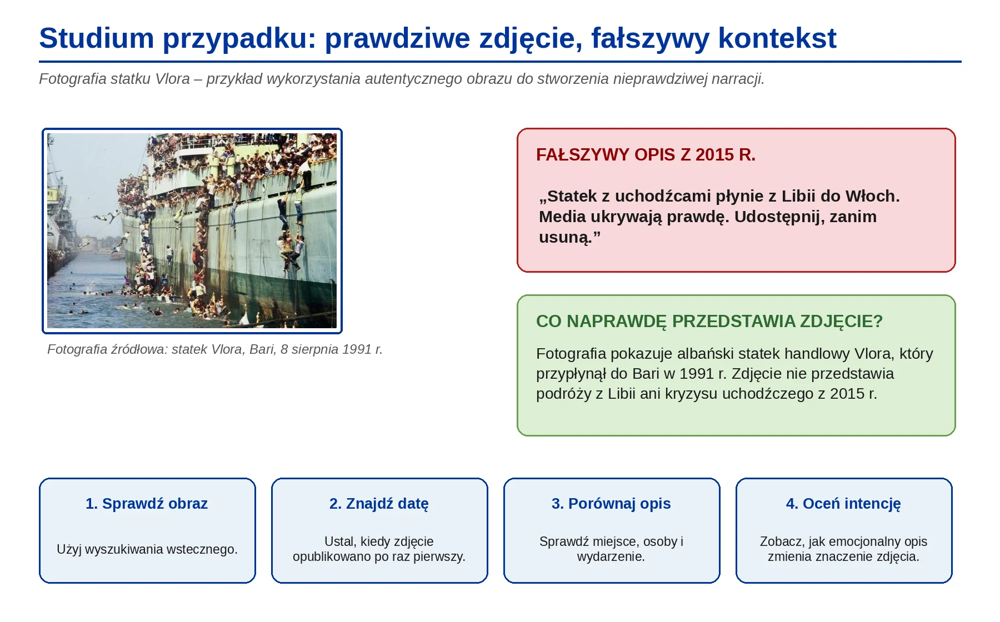
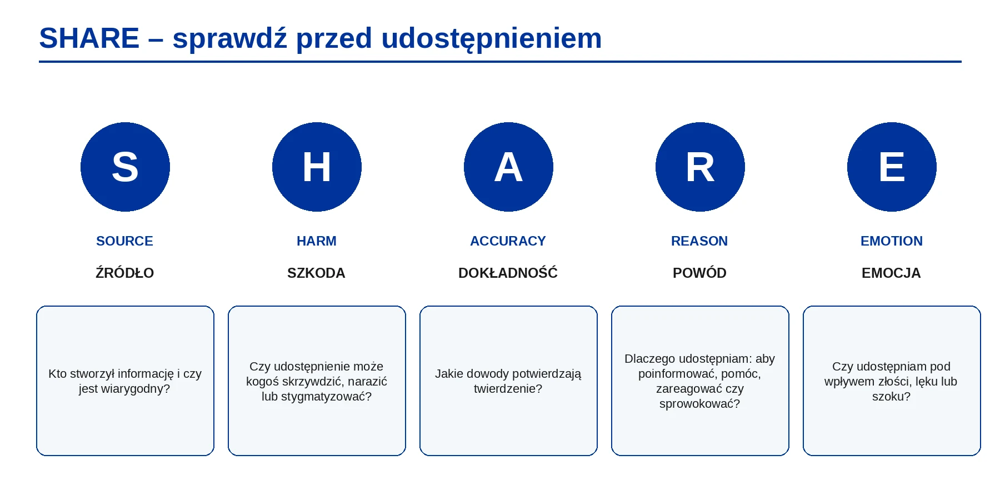

1
GOOGLE FORMS
Formularz uczestnika
Podaj dane potrzebne do potwierdzenia udziału i wystawienia certyfikatu. We wszystkich formularzach użyj tego samego adresu e-mail.
Otwórz formularz uczestnikaGoogle FormsEDUKACJA BEZ GRANIC · WYDANIE SZKOLENIOWE 2026
Interaktywny kurs rozwijający umiejętność świadomego korzystania z informacji, rozpoznawania manipulacji, krytycznej oceny źródeł oraz budowania odporności informacyjnej.
Program szkolenia został wypracowany we współpracy z Areadne Lifelong Learning Centre w ramach projektu „Edukacja bez granic”.
ZANIM ROZPOCZNIESZ
Prosimy o wypełnienie dwóch krótkich formularzy Google przed rozpoczęciem nauki. Pozwoli to potwierdzić udział w kursie i porównać wiedzę uczestnika przed szkoleniem oraz po jego zakończeniu.
Podaj dane potrzebne do potwierdzenia udziału i wystawienia certyfikatu. We wszystkich formularzach użyj tego samego adresu e-mail.
Otwórz formularz uczestnikaGoogle FormsKrótki test diagnostyczny pokazuje punkt wyjścia. Jego wynik nie blokuje dostępu do kursu, ale wypełnienie testu jest wymagane do uzyskania certyfikatu.
Otwórz test wstępnyGoogle FormsPRYWATNY ZESZYT UCZESTNIKA
Odpowiedzi z ćwiczeń i samoocen zapisują się automatycznie w tej przeglądarce. Możesz pobrać kartę pracy każdego modułu, zbiorczy PDF całego kursu oraz zapisać i później wczytać swój postęp.
Odpowiedzi są zapisywane automatycznie tylko na tym urządzeniu.
MODUŁ 1 · 16 tematów
Ekosystemy informacyjne, platformy, algorytmy i treści przetwarzane z udziałem sztucznej inteligencji
Moduł 1
Funkcjonujemy w środowisku cyfrowym, w którym informacje powstają, są udostępniane, polecane, przerabiane i odbierane niemal bez przerwy. Wiadomości nie docierają do nas wyłącznie przez prasę, radio i telewizję. Korzystamy z mediów społecznościowych, wyszukiwarek, serwisów wideo, komunikatorów, społeczności internetowych, kont twórców oraz narzędzi opartych na sztucznej inteligencji.
Edukacja medialna nie ogranicza się więc do rozumienia tradycyjnych mediów. Obejmuje cały cyfrowy ekosystem informacyjny: kto tworzy przekaz, jak przekaz się rozchodzi, dlaczego platforma zwiększa jego widoczność, jak algorytm dobiera treści, kiedy system AI je generuje lub poleca oraz w jaki sposób reagują użytkownicy.
Zagadnienia tego modułu łączą się z inicjatywą OECD PISA 2029 Media and Artificial Intelligence Literacy (MAIL). PISA 2029 MAIL bada, czy młodzi ludzie potrafią świadomie i krytycznie działać w środowisku, w którym tworzenie treści, uczestnictwo i kontakty społeczne coraz częściej odbywają się za pośrednictwem narzędzi cyfrowych oraz AI. Moduł odwołuje się również do AILit Framework – ram kompetencji w zakresie sztucznej inteligencji opracowanych przez Komisję Europejską i OECD.
Moduł 1
Edukacja medialna pomaga podejmować decyzje na podstawie sprawdzonych danych, oceniać źródła, rozpoznawać treści wprowadzające w błąd oraz uczestniczyć w debacie publicznej bez wzmacniania fałszywych przekazów.
Komisja Europejska łączy edukację medialną z krytycznym myśleniem, świadomym podejmowaniem decyzji, debatą demokratyczną oraz odpornością na dezinformację i manipulację informacją. Do współczesnych zagrożeń zalicza się między innymi traktowanie mediów społecznościowych i influencerów jako głównego źródła wiadomości, skoordynowane działania fałszywych kont, wzmacnianie przekazów przez algorytmy oraz manipulacyjne użycie generatywnej sztucznej inteligencji.
W praktyce osoba korzystająca z mediów powinna umieć odpowiedzieć na następujące pytania:
Edukacja medialna łączy się z krytycznym myśleniem, obywatelstwem cyfrowym, uczestnictwem demokratycznym oraz dobrostanem psychicznym. Sposób korzystania z informacji wpływa na decyzje, relacje, poczucie bezpieczeństwa i jakość publicznej rozmowy.
Moduł 1
Po zakończeniu modułu uczestnik:
1wyjaśnia, czym jest edukacja medialna w środowisku cyfrowym;
2opisuje główne elementy cyfrowego ekosystemu informacyjnego;
3rozumie, jak platformy, algorytmy i systemy AI wpływają na treści widoczne w internecie;
4rozpoznaje ryzyka związane z komorami pogłosowymi, bańkami filtrującymi i personalizacją;
5analizuje własne nawyki i źródła informacji;
6łączy edukację medialną z kompetencjami w zakresie AI i krytycznym myśleniem;
7rozumie, w jaki sposób PISA 2029 MAIL i AILit opisują odpowiedzialne korzystanie z informacji;
8wprowadza zdrowsze i bardziej świadome nawyki korzystania z mediów.
Moduł 1
Edukacja medialna oznacza zdolność do docierania do treści medialnych, rozumienia ich, analizowania, oceniania, tworzenia i odpowiedzialnego udostępniania. W środowisku cyfrowym zakres tej kompetencji jest szerszy. Obejmuje także rozumienie:
UNESCO ujmuje edukację medialną i informacyjną jako zestaw kompetencji potrzebnych do poruszania się w środowisku komunikacyjnym. Program UNESCO łączy ją ze sztuczną inteligencją, obywatelstwem cyfrowym, dezinformacją i krytycznym myśleniem.
Moduł 1
Wcześniej edukacja medialna skupiała się głównie na prasie, telewizji, radiu, reklamie i nadawcach publicznych. Obecnie środowisko medialne obejmuje też:
Zmieniła się także pozycja odbiorcy. W tradycyjnym modelu człowiek był przede wszystkim widzem, słuchaczem lub czytelnikiem. W środowisku cyfrowym jest również użytkownikiem, obserwatorem, subskrybentem, komentatorem, twórcą, osobą udostępniającą treści i źródłem danych dla platform.
Odpowiedzialność nie dotyczy więc wyłącznie oceny materiałów przygotowanych przez innych. Obejmuje też własny udział w rozpowszechnianiu, wzmacnianiu, poprawianiu albo podważaniu informacji.
Moduł 1

Cyfrowy ekosystem informacyjny to sieć osób, instytucji, platform, technologii i praktyk, za pomocą których informacje powstają, krążą i są interpretowane.
| Element | Funkcja w ekosystemie informacyjnym |
|---|---|
| Redakcje i organizacje medialne | Przygotowują oraz rozpowszechniają materiały dziennikarskie. |
| Platformy społecznościowe | Umożliwiają tworzenie, udostępnianie, komentowanie i ocenianie treści. |
| Wyszukiwarki | Porządkują wyniki i decydują o kolejności dostępu do informacji. |
| Influencerzy i twórcy | Wpływają na opinie, trendy, wybory i zachowania odbiorców. |
| Komunikatory | Przenoszą informacje w sieciach prywatnych lub częściowo zamkniętych. |
| Algorytmy | Wybierają, szeregują, polecają albo ukrywają treści. |
| Systemy AI | Generują, streszczają, klasyfikują, tłumaczą i polecają informacje. |
| Reklamodawcy | Zwiększają widoczność przekazów przez płatną promocję. |
| Użytkownicy | Odbierają, tworzą, komentują i udostępniają treści. |
| Fact-checkerzy | Weryfikują twierdzenia i badają przekazy wprowadzające w błąd. |
| Instytucje publiczne | Publikują komunikaty urzędowe, dane i dokumenty. |
| Źródła naukowe i akademickie | Dostarczają wiedzy opartej na badaniach i metodach naukowych. |
OECD wskazuje, że użytkownicy korzystają z platform medialnych i systemów AI, aby wyszukiwać wiadomości, uczyć się, kontaktować i współpracować. Jednocześnie treści internetowe mogą być nierzetelne, jednostronne, plagiatowane lub mylące, a generatywna AI przyspiesza ich produkcję.
Zrozumienie tego ekosystemu pomaga ustalić, gdzie pojawiają się błędy, kto zwiększa zasięg informacji i dlaczego materiał o słabej jakości może dotrzeć do wielu odbiorców.
Moduł 1


Platformy cyfrowe nie pokazują wszystkim tych samych treści. Algorytmy dobierają materiały do użytkownika na podstawie różnych sygnałów, takich jak:
Personalizacja ułatwia szybkie odnalezienie treści zgodnych z zainteresowaniami. Może jednak prowadzić do sytuacji, w której użytkownik:
Moduł 1

Komora pogłosowa to środowisko komunikacyjne, w którym człowiek spotyka głównie poglądy podobne do własnych. Powtarzane przekonania wzajemnie się wzmacniają. Z czasem uczestnik takiej przestrzeni może odnieść wrażenie, że:
Bańka filtrująca powstaje, gdy platforma dopasowuje treści do wcześniejszej aktywności użytkownika. Człowiek może wtedy nie widzieć pełnego zakresu dostępnych informacji.
Bańki filtrujące ograniczają kontakt z odmiennymi poglądami politycznymi, alternatywnymi wyjaśnieniami, głosami mniejszości, sprostowaniami i argumentami pokazującymi złożoność problemu. Komory pogłosowe oraz bańki filtrujące osłabiają krytyczną ocenę, ponieważ zmniejszają kontakt z różnorodnymi dowodami i punktami widzenia.
| Zjawisko | Jak powstaje | Możliwy skutek |
|---|---|---|
| Komora pogłosowa | Ludzie dobierają grupy i źródła zgodne z własnymi przekonaniami, a uczestnicy wzajemnie powtarzają podobne opinie. | Rosnąca pewność, że poglądy grupy są powszechne i bezsporne. |
| Bańka filtrująca | Platforma dobiera treści na podstawie zachowania i profilu użytkownika. | Mniejszy kontakt z innymi źródłami, argumentami i sprostowaniami. |
Moduł 1


Sztuczna inteligencja jest częścią współczesnego środowiska medialnego. Może uczestniczyć w tworzeniu, selekcji i objaśnianiu informacji.
Systemy AI mogą:
AILit Framework opisuje potrzebę rozumienia sposobu działania AI, jej wpływu społecznego i zasad etycznego użycia. W edukacji medialnej szczególnego znaczenia nabierają trzy funkcje AI:
AI potrafi wygenerować przekonujący tekst, obraz, film i nagranie głosu. Ułatwia pracę twórczą oraz naukę, lecz może też służyć do wytwarzania fikcyjnych dowodów, fałszywych profili i materiałów podszywających się pod rzeczywistość.
Systemy oparte na AI ustalają, co pojawi się w kanale użytkownika, wynikach wyszukiwania lub na liście rekomendacji. Wpływają więc na widoczność treści, nawet gdy użytkownik nie zdaje sobie z tego sprawy.
Narzędzia AI streszczają, tłumaczą i objaśniają informacje. Mogą jednak popełniać błędy, pomijać kontekst, mieszać źródła albo powtarzać uprzedzenia obecne w danych.
Moduł 1
PISA 2029 MAIL opisuje kompetencje potrzebne do skutecznego, etycznego i odpowiedzialnego korzystania z treści cyfrowych, platform medialnych oraz systemów AI. Ocena dotyczy między innymi sposobu, w jaki uczniowie badają wiarygodność, jakość i cel treści cyfrowych oraz podejmują świadome działania w społeczeństwie.
| Wymiar PISA MAIL | Powiązanie z modułem |
|---|---|
| Dostęp do informacji i korzystanie z nich | Uczestnik analizuje, skąd pochodzą jego informacje i w jaki sposób do nich dociera. |
| Analiza i ocena treści | Uczestnik stawia pytania o źródło, platformę, algorytm i widoczność przekazu. |
| Rozumienie mediów i systemów AI | Uczestnik bada, jak platformy i AI kształtują środowisko informacyjne. |
| Działanie etyczne i odpowiedzialne | Uczestnik ocenia własną rolę jako odbiorcy, twórcy i osoby udostępniającej treści. |
| Uczestnictwo w społeczeństwie cyfrowym | Uczestnik łączy edukację medialną z demokratycznym dialogiem i odpowiedzialną komunikacją. |
Perspektywa PISA 2029 MAIL wykracza poza rozpoznawanie fałszywych wiadomości. Sprawdza, czy osoba rozumie systemy cyfrowe, potrafi ocenić jakość informacji i działa odpowiedzialnie.
AILit Framework pomaga projektować uczenie się związane ze sztuczną inteligencją. Został przygotowany dla nauczycieli, osób zarządzających edukacją, twórców polityk publicznych i projektantów uczenia się. W tym module najbliższy tematyce jest obszar „Engaging with AI”, czyli świadome korzystanie z AI i rozpoznawanie jej obecności w codziennych narzędziach.
Związek edukacji medialnej z AI można rozpoznać przez następujące pytania:
Moduł 1
| Obszar pytania | Pytania pomocnicze |
|---|---|
| Źródło | Kto stworzył informację? Czy autor lub organizacja są rozpoznawalni? Jakie mają kompetencje? Jaki może być cel publikacji? |
| Przekaz | Jaka jest główna teza? Jakie dowody ją wspierają? Czy język jest neutralny, czy emocjonalny? Czego nie pokazano? |
| Platforma | Gdzie zobaczyłem treść? Dlaczego platforma mogła mi ją wyświetlić? Czy była wyszukana, polecona, udostępniona lub promowana? |
| Sztuczna inteligencja | Czy AI mogła stworzyć, zmienić, streścić lub polecić materiał? Czy powinienem dotrzeć do źródła pierwotnego? |
| Moja reakcja | Jaką emocję wywołuje przekaz? Czy akceptuję go dlatego, że potwierdza moje poglądy? Czy odczuwam presję natychmiastowego udostępnienia? |
Moduł 1
Edukacja medialna jest kompetencją obywatelską. Demokracja potrzebuje osób, które potrafią docierać do wiarygodnych informacji, porównywać stanowiska, rozpoznawać manipulację, rozmawiać z szacunkiem, nie rozpowszechniać szkodliwych fałszywych treści oraz odróżniać dowód, opinię i propagandę.
Komisja Europejska łączy edukację medialną i krytyczne myślenie z odpornością demokratyczną, przygotowaniem obywateli oraz umiejętnością rozpoznawania zagrożeń dla integralności informacji.
Ciągły kontakt z informacjami może też obciążać psychicznie. Użytkownicy doświadczają przeciążenia, doomscrollingu, niepokoju wywołanego negatywnymi wiadomościami, zmęczenia emocjonalnego, presji szybkiej reakcji i dezorientacji wynikającej ze sprzecznych komunikatów.
Bardziej świadome nawyki korzystania z mediów obejmują:
Moduł 1
Ćwiczenia prowadzą od obserwacji własnych nawyków do analizy źródeł, algorytmów i treści wspieranych przez AI. Odpowiedzi nie służą do oceny uczestnika. Pokazują sposób myślenia w danym momencie.
Instrukcja:
1Przypomnij sobie wiadomości, komunikaty i materiały, z których korzystałeś w ciągu ostatniej doby.
2Uwzględnij informacje zawodowe, lokalne, społeczne, zdrowotne, polityczne i rozrywkowe.
3Przy każdym przykładzie zaznacz, w jaki sposób do Ciebie dotarł.
4Nie oceniaj jeszcze jakości źródła. Najpierw odtwórz faktyczną ścieżkę informacji.
| Sposób dotarcia | Przykład informacji | Źródło / platforma |
|---|---|---|
| Samodzielnie wyszukana informacja | ||
| Informacja przesłana przez inną osobę | ||
| Treść polecona przez platformę | ||
| Treść wyświetlona w kanale przez algorytm | ||
| Treść wygenerowana, streszczona lub przetłumaczona przez AI |
Co najbardziej Cię zaskoczyło?
Pomyśl, skąd czerpiesz informacje o aktualnych wydarzeniach, zdrowiu, pracy, polityce, nauce, technologii, edukacji, sprawach społecznych, rozrywce i najbliższym otoczeniu. Wpisz konkretne źródła – nazwę portalu, kanału, profilu, aplikacji, newslettera, instytucji lub osoby.
| Źródło / platforma | Do czego używam? | Jak często? | Dlaczego ufam? | Możliwe ryzyko |
|---|---|---|---|---|
Po uzupełnieniu tabeli odpowiedz:
1Czy wśród źródeł dominują portale informacyjne, media społecznościowe, komunikatory czy osoby prywatne?
2Czy korzystasz ze źródeł pierwotnych, na przykład komunikatów urzędu, danych statystycznych lub publikacji naukowych?
3Które źródło może przedstawiać temat jednostronnie?
4Które źródło może być wybierane przez algorytm?
5Gdzie w Twoim ekosystemie pojawia się AI?
Oceń każde stwierdzenie w skali od 1 do 5. Wybierz jedną odpowiedź: 1 – zdecydowanie się nie zgadzam, 5 – zdecydowanie się zgadzam.
| Stwierdzenie | 1 | 2 | 3 | 4 | 5 |
|---|---|---|---|---|---|
| Korzystam z więcej niż jednego źródła, zanim wyrobię sobie opinię. | |||||
| Regularnie sprawdzam informacje w źródłach oficjalnych lub eksperckich. | |||||
| Spotykam w internecie poglądy, które podważają moje stanowisko. | |||||
| Rozpoznaję, kiedy treść została mi polecona przez algorytm. | |||||
| Rozpoznaję posty, które próbują wywołać szybką reakcję emocjonalną. | |||||
| Zdarza mi się weryfikować informację przed jej udostępnieniem. | |||||
| Pamiętam, że AI może tworzyć przekonujące, lecz błędne materiały. |
Po udzieleniu siedmiu odpowiedzi zobaczysz podsumowanie swoich nawyków informacyjnych.
Mój pierwszy krok po tej samoocenie:
Pracuj samodzielnie. Odpowiedz krótko i szczerze na każde pytanie. Na końcu wybierz dwa najważniejsze wnioski, które chcesz zachować i wykorzystać w dalszej części kursu.
1Z jakich źródeł korzystasz najczęściej?
2Którym źródłom ufasz najbardziej i z czego wynika to zaufanie?
3Które źródła mogą częściej narażać Cię na błędne lub fałszywe informacje?
4Czy widzisz głównie podobne poglądy, czy różne perspektywy?
5Jak często docierasz do pierwotnego źródła twierdzenia?
6W którym miejscu Twojego ekosystemu może działać AI?
7Jaki nawyk medialny chcesz zmienić?
Moje dwa najważniejsze wnioski:
Pracuj krok po kroku. Najpierw zapisz pierwszą reakcję. Potem odpowiedz na pytania. Nie sprawdzaj informacji w internecie, dopóki nie dojdziesz do części „Weryfikacja”.
Co pomyślałeś jako pierwsze?
1Kogo oznacza słowo „oni” lub sformułowanie „nie chcą”?
2Jakie badanie przywołuje autor?
3Czy podano link do publikacji albo nazwę instytucji?
4Jaką emocję post próbuje wywołać?
5Dlaczego odbiorca ma udostępnić treść szybko?
6Czy ogólna teza może zawierać część prawdy, a mimo to wprowadzać w błąd?
7Co trzeba sprawdzić przed uznaniem przekazu za wiarygodny?
8Jak algorytm może zwiększyć zasięg takiego postu?
Uzupełnij zdania samodzielnie. Odpowiedzi zachowaj do końca całego szkolenia.
Jedna rzecz, którą zauważyłem w swoich nawykach informacyjnych:
Źródło, które powinienem sprawdzać uważniej:
Sposób, w jaki algorytmy mogą wpływać na moje wybory:
Miejsce, w którym AI może działać w moim środowisku informacyjnym:
Jedna zmiana, którą wprowadzę w korzystaniu z mediów:
Pytanie, na które nadal szukam odpowiedzi:
Moduł 1
| Pojęcie | Definicja |
|---|---|
| Edukacja medialna | Zdolność do docierania do przekazów medialnych, analizowania ich, oceniania, tworzenia i odpowiedzialnego udostępniania. |
| Ekosystem informacyjny | Sieć osób, platform, instytucji i technologii uczestniczących w tworzeniu oraz rozpowszechnianiu informacji. |
| Algorytm | Zestaw reguł lub procesów używanych przez system cyfrowy do sortowania, porządkowania i polecania treści. |
| Personalizacja | Dopasowanie treści cyfrowych do zachowania, preferencji lub profilu użytkownika. |
| Komora pogłosowa | Środowisko, w którym użytkownik spotyka głównie poglądy podobne do własnych. |
| Bańka filtrująca | Spersonalizowane środowisko informacyjne, które może ograniczać kontakt z różnorodnymi perspektywami. |
| Treść wygenerowana przez AI | Tekst, obraz, dźwięk lub film utworzony przez system sztucznej inteligencji. |
| Treść wybrana przez AI | Materiał uporządkowany, sklasyfikowany lub polecony przez system oparty na AI. |
| Misinformation | Fałszywa lub niedokładna informacja rozpowszechniana bez koniecznej intencji wyrządzenia szkody. |
| Dezinformacja | Fałszywa lub myląca informacja stworzona albo udostępniona celowo, aby oszukać odbiorców. |
| Krytyczne myślenie | Analizowanie, ocenianie i interpretowanie informacji przed sformułowaniem wniosku. |
| Obywatelstwo cyfrowe | Odpowiedzialne, etyczne i aktywne uczestnictwo w środowisku cyfrowym. |
Moduł 1
1Edukacja medialna pomaga świadomie funkcjonować w środowisku cyfrowym.
2Informacje nie docierają przypadkowo. Ich widoczność kształtują platformy, algorytmy, sieci społeczne i systemy AI.
3Użytkownik jest odbiorcą, twórcą i uczestnikiem ekosystemu informacyjnego.
4Komory pogłosowe i bańki filtrujące mogą ograniczać kontakt z odmiennymi perspektywami.
5AI może tworzyć, wybierać, streszczać i przekształcać informacje.
6Krytyczna ocena zaczyna się od pytań o źródło, przekaz, platformę, technologię i własną reakcję.
7Edukacja medialna wspiera odpowiedzialną komunikację oraz uczestnictwo w życiu demokratycznym.
8Zdrowsze nawyki informacyjne zmniejszają przeciążenie i stres.
Moduł 1
[1] OECD. PISA 2029 Media and Artificial Intelligence Literacy (MAIL). https://www.oecd.org/en/about/projects/pisa-2029-media-and-artificial-intelligence-literacy.html
[2] AILit Framework. Empowering Learners for the Age of AI: An AI Literacy Framework for Primary and Secondary Education. https://ailiteracyframework.org/
[3] European Commission. Media literacy – Shaping Europe’s digital future. https://digital-strategy.ec.europa.eu/en/policies/media-literacy
[4] UNESCO. Media and Information Literacy Curriculum – E-version. https://www.unesco.org/mil4teachers/en/curriculum
[5] UNESCO. Media and Information Literacy. https://www.unesco.org/en/media-information-literacy
MODUŁ 2 · 22 tematów
Nieład informacyjny, mechanizmy emocjonalne, błędy poznawcze, weryfikacja oraz treści syntetyczne
Moduł 2
W pierwszym module uczestnik poznał cyfrowy ekosystem informacyjny i analizował wpływ platform, algorytmów, sieci społecznych oraz narzędzi AI na otrzymywane treści. Drugi moduł pokazuje, w jaki sposób w tym ekosystemie krążą informacje fałszywe, mylące, jednostronne i emocjonalnie manipulacyjne.
Określenie „fake news” jest powszechne, lecz mało precyzyjne. Czasem błędna informacja zostaje udostępniona przez pomyłkę. Innym razem ktoś tworzy fałszywy przekaz celowo. Zdarza się też, że autor używa prawdziwych danych, lecz przedstawia je bez kontekstu albo wykorzystuje do wyrządzenia szkody. Dlatego w module pojawia się szersze pojęcie nieładu informacyjnego, obejmujące misinformation, dezinformację, malinformation, manipulację i stronniczość.
Zakres modułu łączy się z PISA 2029 MAIL, które opisuje ocenę wiarygodności, jakości i celu treści cyfrowych, a także odpowiedzialne działanie w środowisku cyfrowym. Materiał nawiązuje też do programu UNESCO dotyczącego edukacji medialnej i informacyjnej, w tym do fact-checkingu, oceny źródeł, analizy treści i odpowiedzialnego korzystania z informacji.
Moduł 2
Po zakończeniu modułu uczestnik:
1wyjaśnia różnicę między misinformation, dezinformacją i malinformation;
2rozpoznaje typowe formy fałszywych i mylących przekazów;
3identyfikuje emocje wykorzystywane do sterowania uwagą i oceną;
4rozumie wpływ błędów poznawczych na interpretację informacji;
5stosuje podstawowe techniki fact-checkingu i weryfikacji;
6analizuje przykłady wiadomości za pomocą uporządkowanych pytań;
7rozpoznaje udział AI w tworzeniu i przekształcaniu dezinformacji;
8reaguje odpowiedzialnie na podejrzane treści.
Moduł 2


Jedno określenie „fake news” łączy zjawiska, które różnią się intencją, sposobem przygotowania i skutkami. Całkowicie zmyślony artykuł, nagłówek wyolbrzymiający wynik badania, stare zdjęcie użyte jako dowód aktualnego wydarzenia, satyra potraktowana jak wiadomość oraz jednostronny komentarz polityczny wymagają odmiennej oceny.
| Rodzaj | Znaczenie | Przykład |
|---|---|---|
| Misinformation | Fałszywa lub niedokładna informacja udostępniona bez koniecznej intencji wyrządzenia szkody. | Ktoś przekazuje błędną poradę zdrowotną, ponieważ uważa ją za pomocną. |
| Dezinformacja | Fałszywa lub myląca treść stworzona albo rozpowszechniana celowo, aby oszukać, wpłynąć na odbiorców lub wyrządzić szkodę. | Skoordynowana kampania publikuje fałszywe twierdzenie przed wyborami. |
| Malinformation | Prawdziwa informacja użyta w sposób szkodliwy, mylący lub pozbawiony kontekstu. | Prywatne dane zostają ujawnione po to, aby zniszczyć czyjąś reputację. |
| Manipulacja | Strategiczne użycie języka, obrazu, emocji, ramy interpretacyjnej albo wybranych faktów, aby wpłynąć na odbiór. | Post wykorzystuje strach i presję czasu, aby skłonić do udostępnienia. |
| Stronniczość | Jednostronny sposób doboru, przedstawiania lub interpretowania informacji. | Materiał pokazuje wyłącznie dane wspierające jedno stanowisko polityczne. |
Komisja Europejska wskazuje, że podczas sytuacji kryzysowych błędne informacje mogą wynikać z nieporozumienia, słabej komunikacji lub szybkiego obiegu niesprawdzonych treści. Nawet osoba działająca bez złej intencji może zwiększyć zasięg narracji stworzonej w celu oszustwa i doprowadzić do szkody poza internetem.
Moduł 2
Przyczyny mają charakter technologiczny, psychologiczny i społeczny. Zwykle działają jednocześnie.
Platformy premiują treści, które przyciągają uwagę. Materiał wywołujący kliknięcia, komentarze, reakcje i udostępnienia może otrzymać większy zasięg. Przekazy szokujące, polaryzujące lub budzące silne emocje rozchodzą się więc szybko, nawet gdy ich jakość jest niska.
Ludzie chętniej wierzą w informacje i udostępniają je, gdy przekaz:
Użytkownicy udostępniają treści, aby:
Moduł 2
| Typ | Opis | Przykład |
|---|---|---|
| Treść całkowicie zmyślona | Fałszywa informacja przedstawiona jako fakt. | Zmyślony artykuł o zmianie zasad świadczeń publicznych. |
| Mylący nagłówek | Nagłówek wyolbrzymia lub zniekształca treść materiału. | „Naukowcy dowiedli, że X jest niebezpieczne”, choć badanie było ograniczone i nie daje takiego wniosku. |
| Fałszywy kontekst | Prawdziwa treść zostaje przypisana do innego czasu, miejsca lub wydarzenia. | Stare zdjęcie z innego kraju jest przedstawiane jako aktualne wydarzenie w Polsce. |
| Podszywanie się | Autor udaje zaufaną osobę, instytucję albo redakcję. | Fałszywe konto naśladuje urząd lub organ państwowy. |
| Treść zmanipulowana | Autentyczny materiał zostaje przerobiony, przycięty lub zmontowany w celu zmiany znaczenia. | Krótki fragment nagrania usuwa wypowiedź poprzedzającą i zmienia sens słów. |
| Satyra uznana za wiadomość | Humorystyczny materiał zostaje potraktowany jako informacja faktyczna. | Artykuł z portalu satyrycznego krąży jako opis rzeczywistego zdarzenia. |
| Cherry-picking | Autor wybiera wyłącznie dane zgodne z tezą i pomija informacje, które jej przeczą. | Post przywołuje pojedynczy procent bez liczebności próby i bez porównania. |
| Rama spiskowa | Przekaz sugeruje ukrytą kontrolę wpływowej grupy, ale nie pokazuje dowodów. | „Oni ukrywają przed tobą prawdę”. |
| Fałszywa treść wygenerowana przez AI | AI tworzy przekonujący, lecz fikcyjny tekst, obraz, głos lub film. | Realistyczne zdjęcie wydarzenia, które nigdy się nie odbyło. |
OECD zwraca uwagę, że generatywna AI przyspiesza i upraszcza wytwarzanie treści. Zwiększa to liczbę materiałów dostępnych w sieci i utrudnia szybką ocenę ich pochodzenia.
Moduł 2


Przekaz manipulacyjny często próbuje wywołać reakcję, zanim odbiorca zacznie sprawdzać fakty. Wykorzystuje między innymi:
Silna emocja nie dowodzi, że wiadomość jest fałszywa. Prawdziwe wydarzenia również budzą lęk, gniew lub współczucie. Emocja powinna jednak uruchomić przerwę i potrzebę sprawdzenia treści.

Post wykorzystuje strach, presję czasu, nieokreślone oskarżenie, nacisk emocjonalny i brak dowodów. Uważny odbiorca powinien zapytać: Kogo oznacza „oni”? Co dokładnie zarzuca autor? Gdzie znajdują się dowody? Dlaczego mam udostępnić nagranie natychmiast?
Przeczytaj fikcyjny post ponownie. Nie analizuj go od razu. Najpierw nazwij pierwszą reakcję.
Co w przekazie wywołało tę reakcję?
Teraz oddziel emocję od faktów:
| Element postu | Co wiem na pewno? | Czego nie wiem? |
|---|---|---|
| „Szokujący film” | ||
| „To robią naszym dzieciom” | ||
| „Udostępnij natychmiast” | ||
| „Zostanie usunięte” |
Moduł 2
Błędy poznawcze to skróty myślowe, które pomagają szybko porządkować informacje. Czasem prowadzą jednak do nietrafnych ocen.
| Błąd poznawczy | Na czym polega? | Pytanie kontrolne |
|---|---|---|
| Efekt potwierdzenia | Preferujemy informacje zgodne z tym, w co już wierzymy. | Czy akceptuję przekaz dlatego, że się z nim zgadzam? |
| Heurystyka dostępności | Oceniamy zdarzenie jako częste lub prawdopodobne, ponieważ łatwo przywołać wyrazisty przykład. | Czy opieram ocenę na danych, czy na zapamiętanym przypadku? |
| Efekt autorytetu | Ufamy przekazowi, bo pochodzi od osoby, która wygląda na wpływową lub kompetentną. | Czy ta osoba rzeczywiście zna się na tym temacie? |
| Stronniczość grupowa | Łatwiej ufamy informacjom pochodzącym od ludzi podobnych do nas. | Czy uwierzyłbym w to samo, gdyby napisała to inna grupa? |
| Negativity bias | Negatywne treści przyciągają więcej uwagi niż neutralne lub pozytywne. | Czy reaguję głównie dlatego, że materiał jest alarmujący? |
| Efekt iluzorycznej prawdy | Często powtarzana informacja zaczyna wydawać się prawdziwa mimo braku dowodów. | Czy widziałem dowód, czy wyłącznie wiele razy spotkałem to twierdzenie? |
| Efekt zakotwiczenia | Pierwsza poznana informacja wpływa na późniejszą ocenę. | Czy nadal kieruję się pierwszą wersją wydarzeń? |
Rozpoznanie błędów poznawczych nie oznacza, że człowiek jest nieracjonalny. Ocena zależy od emocji, pamięci, tożsamości, powtarzalności informacji i zaufania społecznego. Edukacja medialna pomaga zauważyć te wpływy przed podjęciem decyzji.
Pomyśl o poście dotyczącym sprawy społecznej, zawodowej lub politycznej, z którym od razu się zgodziłeś. Nie zapisuj danych osoby ani treści wrażliwych. Opisz tylko sposób, w jaki materiał na Ciebie zadziałał.
Jaka była główna teza postu?
Dlaczego przekaz wydawał się wiarygodny?
Zaznacz możliwe wpływy:
Co sprawdziłbyś teraz przed udostępnieniem?
Moduł 2


Moduł 2


Weryfikacja nie zawsze wymaga specjalistycznego oprogramowania. Najpierw trzeba przerwać automatyczną reakcję i zadać lepsze pytania.
| Etap | Pytanie lub działanie |
|---|---|
| S – Stop / Zatrzymaj się | Nie reaguj i nie udostępniaj od razu. Nazwij własną emocję. |
| I – Investigate the source / Zbadaj źródło | Ustal, kto stworzył treść, czy jest wiarygodny i po co ją opublikował. |
| F – Find better coverage / Znajdź lepsze źródła | Sprawdź, czy wiarygodne redakcje, instytucje lub eksperci opisują to samo twierdzenie. |
| T – Trace to the original context / Dotrzyj do pierwotnego kontekstu | Ustal, skąd pochodzi cytat, zdjęcie, nagranie, dokument albo dane. |
Metoda SIFT jest stosowana w edukacji medialnej i informacyjnej jako prosty sposób oceny treści online. Użytkownik zatrzymuje się, bada źródło, szuka lepszego omówienia oraz dociera do pierwotnego materiału.
Czytanie boczne polega na opuszczeniu analizowanej strony i otwarciu innych źródeł. Zamiast wierzyć temu, co portal mówi o sobie, użytkownik sprawdza, jak opisują go niezależne źródła. W ten sam sposób porównuje twierdzenie z materiałami urzędowymi, naukowymi, dziennikarskimi i fact-checkingowymi.

Wykonaj cztery etapy. Zapisz, co robisz, a nie wyłącznie końcową ocenę.
| Etap | Moje działanie | Wynik |
|---|---|---|
| S – Zatrzymaj się | ||
| I – Zbadaj źródło | ||
| F – Znajdź lepsze źródła | ||
| T – Dotrzyj do pierwotnego kontekstu |
Końcowa decyzja: czy uwierzyć, udostępnić, zgłosić, zignorować lub sprostować? Uzasadnij.
Moduł 2
Przy podejrzanej informacji zaznacz „tak”, „nie” albo wpisz uwagę. Brak jednej odpowiedzi nie rozstrzyga sprawy, lecz pokazuje, czego jeszcze trzeba poszukać.
| Pytanie | Odpowiedź | Notatki |
|---|---|---|
| Czy autor lub organizacja są wyraźnie wskazani? | ||
| Czy data publikacji jest widoczna i odpowiada opisywanemu wydarzeniu? | ||
| Czy treść artykułu potwierdza nagłówek? | ||
| Czy podano źródła pierwotne albo dowody? | ||
| Czy tę samą informację potwierdzają wiarygodne źródła? | ||
| Czy zdjęcia i nagrania są użyte w pierwotnym kontekście? | ||
| Czy język próbuje wywołać silną emocję? | ||
| Czy przekaz wywiera presję czasu? | ||
| Czy materiał może być satyrą, opinią albo reklamą? | ||
| Czy AI mogła stworzyć lub zmienić treść? | ||
| Co muszę sprawdzić przed udostępnieniem? |
Moduł 2


AI może sprawić, że dezinformacja będzie bardziej przekonująca i łatwiejsza do przygotowania. Systemy potrafią tworzyć:
Treść wygenerowana przez AI nie jest z założenia szkodliwa. Może służyć edukacji, twórczości, komunikacji i zwiększaniu dostępności. Problem pojawia się, gdy materiał syntetyczny zostaje pokazany jako autentyczny dowód.
Kompetencje opisane w AILit pomagają rozpoznawać udział AI, rozumieć ograniczenia jej odpowiedzi oraz podejmować odpowiedzialne decyzje dotyczące korzystania z treści pośredniczonych przez sztuczną inteligencję.
Moduł 2


Stronniczość nie oznacza automatycznie, że wszystkie fakty są fałszywe. Materiał może zawierać prawdziwe dane, lecz pozostać jednostronny z powodu doboru faktów, pominięć, sposobu oprawienia albo użytego języka.
| Rodzaj | Opis | Przykład |
|---|---|---|
| Stronniczość doboru | Autor pokazuje tylko część faktów. | Materiał przedstawia wyłącznie negatywne przypadki dotyczące określonej grupy. |
| Stronniczość ramy | To samo wydarzenie zostaje opisane z wybranego punktu widzenia. | Protest jest nazwany „zakłóceniem porządku” albo „mobilizacją obywatelską”. |
| Stronniczość źródeł | Autor cytuje tylko jeden rodzaj rozmówców. | Artykuł przywołuje wyłącznie polityków, pomijając osoby bezpośrednio dotknięte sytuacją. |
| Stronniczość obrazu | Zdjęcie buduje określone skojarzenie. | Dramatyczne zdjęcie towarzyszy neutralnej informacji. |
| Stronniczość języka | Słowa niosą ocenę emocjonalną lub ideologiczną. | „Bojownicy o wolność” i „terroryści”; „migranci” i „najeźdźcy”. |
| Stronniczość statystyczna | Dane są pokazane bez niezbędnego kontekstu. | Podano procent bez liczebności próby, okresu i punktu odniesienia. |
| Fałszywa równowaga | Nierówne jakościowo stanowiska zostają przedstawione jako równie wiarygodne. | Konsensus naukowy zostaje pokazany jako jedna z dwóch równorzędnych opinii. |
Podczas analizy zapytaj:
Przeczytaj dwa fikcyjne nagłówki dotyczące tych samych danych urzędowych:
Odpowiedz osobno dla każdego nagłówka:
| Pytanie | Nagłówek A | Nagłówek B |
|---|---|---|
| Jaki fakt podkreślono? | ||
| Jaki kontekst może być pominięty? | ||
| Jaką emocję może wywołać? | ||
| Jakich danych potrzebujesz? | ||
| Czy oba nagłówki mogą być częściowo prawdziwe? |
Jak dotrzesz do pełnych danych i sprawdzisz ich interpretację?
Moduł 2
Po rozpoznaniu podejrzanej treści trzeba przerwać łańcuch jej rozpowszechniania. Odpowiedzialna reakcja może obejmować:
1zatrzymanie się przed udostępnieniem;
2sprawdzenie źródła i dowodów;
3poszukanie wiarygodnych omówień;
4niewzmacnianie szkodliwej treści;
5spokojne sprostowanie błędnej informacji;
6udostępnienie materiału zweryfikowanego;
7zgłoszenie podszywającego się konta albo treści szkodliwej;
8rozpoznanie momentu, w którym rozmowa przestaje być produktywna;
9ochronę osób narażonych na nękanie lub ujawnienie danych;
10ocenę możliwych skutków publicznego udostępnienia.
Materiały UNESCO dotyczące edukacji medialnej i informacyjnej proponują pracę ze studiami przypadków, analizę problemu, badanie źródeł, analizę treści i kontekstu oraz samodzielne tworzenie komunikatów. Takie działania pomagają zrozumieć mechanizm dezinformacji, a nie wyłącznie zapamiętać definicje.
Moduł 2
| Obszar PISA MAIL | Powiązanie z modułem |
|---|---|
| Ocena wiarygodności | Uczestnik bada źródło, twierdzenie, dowody i kontekst. |
| Ocena jakości | Uczestnik rozróżnia treści wiarygodne, niepełne, mylące i manipulacyjne. |
| Rozpoznanie celu | Uczestnik identyfikuje informowanie, perswazję, reklamę, propagandę i manipulację. |
| Działanie etyczne | Uczestnik nie rozpowszechnia treści niezweryfikowanej lub szkodliwej. |
| Treść pośredniczona przez AI | Uczestnik ocenia, jak AI mogła stworzyć, zmienić lub polecić mylący materiał. |
PISA 2029 MAIL bada, czy uczniowie potrafią ocenić wiarygodność, jakość i cel treści cyfrowych oraz podjąć świadome i etyczne działanie.
Moduł 2
Fake news i manipulacja coraz częściej łączą się z treściami generowanymi albo wzmacnianymi przez AI. Uczestnik powinien:
AILit pomaga traktować AI jako system wpływający na wiedzę, zaufanie, odpowiedzialność i komunikację publiczną, a nie wyłącznie jako narzędzie przyspieszające pracę.
Moduł 2



Wykonaj analizę samodzielnie. Odpowiadaj pełnymi zdaniami. Nie oceniaj wyłącznie tonu postu – zapisz, jakich informacji potrzebujesz i gdzie ich poszukasz.
1Jaka jest główna teza?
2Czy twierdzenie jest konkretne, czy nieokreślone?
3Jakie dowody przedstawiono?
4Jakie emocje przekaz próbuje wywołać?
5Które słowa budują presję czasu lub podejrzliwość?
6Kogo oznaczają „szkoły” i „nauczyciele”?
7Co trzeba zweryfikować?
8Jakie źródła należy sprawdzić?
9Czy post próbuje manipulować zamiast informować?
10Jaka reakcja będzie odpowiedzialna?
Moduł 2
| Pojęcie | Definicja |
|---|---|
| Fake news | Szerokie, potoczne określenie fałszywej lub mylącej informacji przedstawionej jako wiadomość. |
| Misinformation | Fałszywa lub niedokładna informacja przekazana bez koniecznej intencji wyrządzenia szkody. |
| Dezinformacja | Fałszywa lub myląca informacja stworzona albo rozpowszechniana celowo, aby oszukać lub zaszkodzić. |
| Malinformation | Prawdziwa informacja wykorzystana w sposób szkodliwy albo mylący. |
| Manipulacja | Użycie technik wpływających na odbiór, emocje lub zachowanie. |
| Stronniczość | Jednostronna tendencja w doborze, prezentowaniu lub interpretowaniu informacji. |
| Wyzwalacz emocjonalny | Element przekazu przygotowany po to, aby wywołać silną reakcję. |
| Błąd poznawczy | Skrót myślowy, który może wpływać na ocenę. |
| Efekt potwierdzenia | Tendencja do preferowania informacji zgodnych z wcześniejszymi przekonaniami. |
| Cherry-picking | Wybieranie wyłącznie dowodów wspierających jeden wniosek. |
| Fałszywy kontekst | Przedstawienie autentycznego materiału w mylącym czasie, miejscu albo sytuacji. |
| Deepfake | Wygenerowany lub zmieniony przez AI obraz, dźwięk albo film, który wygląda realistycznie. |
| Czytanie boczne | Sprawdzanie, co niezależne źródła mówią o analizowanej stronie lub twierdzeniu. |
| Fact-checking | Proces sprawdzania, czy twierdzenia są zgodne z faktami i poparte dowodami. |
Moduł 2
Rodzaj treści wprowadzającej w błąd, który rozumiem teraz lepiej:
Emocja, na którą powinienem uważać:
Błąd poznawczy, który może wpływać na moje decyzje:
Krok weryfikacji, który zastosuję przed udostępnieniem:
Sposób, w jaki AI utrudnia rozpoznawanie fałszywych treści:
Moja odpowiedzialność jako obywatela cyfrowego:
Moduł 2
Oceń swoją pewność w skali od 1 do 5. 1 oznacza „nie czuję się pewnie”, a 5 – „potrafię wykonać to samodzielnie”.
| Stwierdzenie | 1 | 2 | 3 | 4 | 5 |
|---|---|---|---|---|---|
| Potrafię wyjaśnić różnicę między misinformation i dezinformacją. | |||||
| Rozpoznaję emocjonalną manipulację w treściach internetowych. | |||||
| Rozpoznaję podstawowe błędy poznawcze wpływające na ocenę. | |||||
| Stosuję metodę SIFT do sprawdzania podejrzanych treści. | |||||
| Korzystam z czytania bocznego podczas oceny źródła. | |||||
| Rozpoznaję możliwe sygnały treści zmanipulowanej lub wygenerowanej przez AI. | |||||
| Analizuję stronniczość języka, obrazu i doboru źródeł. | |||||
| Wiem, jak odpowiedzialnie reagować na podejrzaną informację. |
Moduł 2
1Określenie „fake news” jest mało precyzyjne. Kategorie misinformation, dezinformacji i malinformation lepiej opisują różne sytuacje.
2Manipulacja często wykorzystuje emocje, presję czasu, strach, tożsamość grupową i nieufność.
3Błędy poznawcze wpływają na interpretowanie i udostępnianie informacji.
4Materiał może być stronniczy, mimo że zawiera część prawdziwych danych.
5AI ułatwia szybkie tworzenie realistycznych i spersonalizowanych treści fałszywych lub mylących.
6Fact-checking zaczyna się od zatrzymania, zbadania źródła, znalezienia lepszego omówienia i dotarcia do pierwotnego kontekstu.
7Odpowiedzialny użytkownik nie zwiększa zasięgu treści niezweryfikowanej ani szkodliwej.
8Edukacja medialna nie polega na nieufności wobec wszystkiego. Polega na uważnym sprawdzaniu, rozumowaniu i odpowiedzialnym działaniu.
Moduł 2
Fake news i manipulacja dotyczą treści, lecz również uwagi, emocji, tożsamości, technologii i zaufania. Skuteczna ochrona przed manipulacją zaczyna się od prostego nawyku.
Taki sposób działania wzmacnia krytyczne myślenie, chroni debatę demokratyczną i pomaga odpowiedzialnie uczestniczyć w cyfrowym środowisku informacyjnym.
Moduł 2
OECD – PISA 2029 Media and Artificial Intelligence Literacy: https://www.oecd.org/en/about/projects/pisa-2029-media-and-artificial-intelligence-literacy.html
AILit Framework – AI Literacy Framework: https://ailiteracyframework.org/
UNESCO – Media and Information Literacy Curriculum for Teachers: https://www.unesco.org/mil4teachers/en/curriculum-framework/about-curriculum
UNESCO – Media and Information Literacy: Misinformation and Disinformation: https://www.unesco.org/mil4teachers/en/module4/unit5
European Commission – Media Literacy: https://digital-strategy.ec.europa.eu/en/policies/media-literacy
European Commission – Information Manipulation and Misinformation: https://civil-protection-humanitarian-aid.ec.europa.eu/resources-campaigns/information-manipulation-and-misinformation_en
University of California, Merced Library – The SIFT Method: https://libguides.ucmerced.edu/news/evaluation/sift-method
Digital Inquiry Group – Lateral Reading on the Open Internet: https://cor.inquirygroup.org/research/lateral-reading-on-the-open-internet
MODUŁ 3 · 27 tematów
Ocena źródeł i dowodów, dane, narracje, błędy rozumowania, model CLEAR oraz odpowiedzialne korzystanie z AI
Moduł 3
W poprzednich modułach uczestnik poznał cyfrowy ekosystem informacji oraz mechanizmy fake newsów, manipulacji i stronniczości. Ten moduł prowadzi do następnego etapu: świadomego analizowania informacji i podejmowania decyzji na podstawie dowodów, kontekstu i namysłu.
Krytyczne myślenie nie polega na automatycznym odrzucaniu każdej wiadomości ani na nieufności wobec wszystkich źródeł. Oznacza uważne przyjrzenie się tezie, zadanie właściwych pytań, ocenę dowodów, rozpoznanie założeń i wyciągnięcie uzasadnionego wniosku.
W internecie decyzje często zapadają pod presją czasu. Odbiorca widzi niepełny, emocjonalny albo sprzeczny przekaz, który może zostać dodatkowo wzmocniony przez algorytm. Decyzja może dotyczyć zdrowia, pracy, edukacji, finansów, spraw publicznych albo udostępnienia informacji innym osobom.
Moduł 3
Informacja wpływa na zachowanie. To, co czytamy, oglądamy, uznajemy za prawdziwe i przekazujemy dalej, może zmienić decyzję zawodową, zdrowotną, finansową lub obywatelską.
Mylący przekaz może sprawić, że ktoś:
Krytyczne myślenie wspiera samodzielność oceny i odporność społeczną. Pomaga zwolnić tempo reakcji, sprawdzić dowody i uniknąć decyzji opartych wyłącznie na emocjach, stronniczości lub niepełnym obrazie sytuacji.
Moduł 3
Po zakończeniu modułu uczestnik:
1wyjaśnia znaczenie krytycznego myślenia w edukacji medialnej;
2odróżnia fakty, opinie, interpretacje, założenia, przewidywania i sądy wartościujące;
3ocenia wiarygodność, aktualność, przejrzystość i przydatność źródeł;
4sprawdza, czy dowody rzeczywiście wspierają przedstawioną tezę;
5analizuje dane, statystyki, narracje i ramy interpretacyjne;
6rozpoznaje podstawowe błędy logiczne i błędy poznawcze;
7stosuje model CLEAR podczas podejmowania decyzji;
8analizuje dezinformację zdrowotną i komunikaty o ryzyku;
9rozpoznaje sytuacje, w których AI może wspierać albo zniekształcać ocenę;
10tworzy własne zasady podejmowania decyzji opartych na dowodach.
Moduł 3
Krytyczne myślenie to zdolność do jasnego, uważnego i refleksyjnego rozumowania przed przyjęciem twierdzenia albo podjęciem decyzji.
Osoba myśląca krytycznie pyta:
Moduł 3

W codziennych sytuacjach przejście od informacji do działania bywa niemal natychmiastowe.
| Reakcja szybka | Decyzja odpowiedzialna |
|---|---|
| Widzę post → czuję niepokój → uznaję go za prawdziwy → udostępniam → działam. | Widzę twierdzenie → zatrzymuję się → sprawdzam źródło → oceniam dowody → porównuję informacje → zauważam własną reakcję → decyduję. |
Zatrzymanie się jest szczególnie potrzebne, gdy informacja:
Moduł 3

Mylące przekazy często łączą kilka rodzajów zdań. Odbiorca może wtedy odebrać opinię lub przypuszczenie jak potwierdzony fakt.
| Rodzaj wypowiedzi | Znaczenie | Przykład |
|---|---|---|
| Fakt | Zdanie, które można sprawdzić i uznać za prawdziwe albo fałszywe. | Artykuł opublikowano 12 marca 2026 r. |
| Opinia | Osobisty pogląd lub ocena. | Ta decyzja jest niesprawiedliwa. |
| Interpretacja | Wyjaśnienie tego, co mogą oznaczać fakty. | Dane wskazują, że zmieniają się nawyki medialne młodych ludzi. |
| Założenie | Twierdzenie przyjęte bez udowodnienia. | Osoby, które się z tym nie zgadzają, są niedoinformowane. |
| Przewidywanie | Zdanie dotyczące możliwego przyszłego zdarzenia. | Ta technologia zmieni sposób pracy urzędów. |
| Sąd wartościujący | Ocena oparta na wartościach etycznych, kulturowych lub osobistych. | Instytucje powinny chronić dobrostan cyfrowy pracowników. |
Przeczytaj każde zdanie. Wpisz obok: fakt, opinia, interpretacja, założenie, przewidywanie albo sąd wartościujący. Jeżeli zdanie łączy kilka kategorii, zaznacz wszystkie i krótko wyjaśnij swój wybór.
1W badaniu wzięło udział 240 osób.
Twoja klasyfikacja i uzasadnienie:
2Ten raport jest napisany zbyt skomplikowanym językiem.
Twoja klasyfikacja i uzasadnienie:
3Spadek liczby zgłoszeń może oznaczać, że mieszkańcy częściej korzystają z usług online.
Twoja klasyfikacja i uzasadnienie:
4Każdy, kto ufa tej instytucji, jest naiwny.
Twoja klasyfikacja i uzasadnienie:
5Za pięć lat większość porad będzie udzielana przez chatboty.
Twoja klasyfikacja i uzasadnienie:
6Urzędy powinny zawsze publikować pełne dane źródłowe.
Twoja klasyfikacja i uzasadnienie:
Moduł 3


Źródło może być rzetelne, stronnicze, niepełne, eksperckie, nieaktualne, reklamowe albo celowo mylące. Wiarygodności nie ocenia się na podstawie wyglądu strony ani liczby udostępnień.
| Kryterium | Pytania kontrolne |
|---|---|
| Autorstwo i kompetencje | Kto przygotował informację? Czy autor jest wskazany? Jakie ma doświadczenie? Czy jego kompetencje dotyczą tego tematu? |
| Dokładność | Czy podano dowody i źródła? Czy informację można potwierdzić gdzie indziej? Czy występują błędy rzeczowe? |
| Cel | Czy treść informuje, przekonuje, sprzedaje, bawi czy manipuluje? Czy istnieje interes polityczny, handlowy albo ideologiczny? |
| Związek z pytaniem | Czy źródło odpowiada na analizowane pytanie? Czy dowód dotyczy dokładnie tej tezy? |
| Aktualność | Kiedy materiał powstał? Czy sytuacja od tego czasu się zmieniła? |
| Przejrzystość | Czy widać metodę, dane i źródła? Czy autor poprawia błędy? Czy wiadomo, skąd pochodzą informacje? |
Wybierz artykuł, post, film albo komunikat dotyczący sprawy zawodowej lub publicznej. Nie wybieraj materiału, który znasz bardzo dobrze. Wypełnij kartę, korzystając z pytań z tabeli.
| Element | Twoje ustalenia |
|---|---|
| Autor lub instytucja | |
| Data publikacji lub aktualizacji | |
| Główna teza materiału | |
| Dowody i linki do źródeł | |
| Cel przekazu | |
| Możliwy konflikt interesów | |
| Informacje znalezione w innych źródłach | |
| Ocena końcowa: wiarygodne / częściowo wiarygodne / niewiarygodne / brak danych |
Moduł 3
Dowód to informacja użyta do poparcia twierdzenia. Nie każdy dowód ma taką samą moc. Trzeba sprawdzić jego pochodzenie, związek z tezą, zakres i ograniczenia.
| Rodzaj dowodu | Mocne strony | Możliwe ograniczenia |
|---|---|---|
| Dane urzędowe | Zwykle zbierane systematycznie i opisane. | Wymagają kontekstu i poprawnej interpretacji. |
| Badanie recenzowane naukowo | Metoda została oceniona przez innych specjalistów. | Badanie może mieć wąski zakres albo trudny język. |
| Opinia eksperta | Może pomóc wyjaśnić złożony temat. | Zależy od kompetencji, niezależności i zgodności tematu z dziedziną eksperta. |
| Relacja świadka | Daje bezpośredni opis zdarzenia. | Może być częściowa, emocjonalna albo oparta na ograniczonej perspektywie. |
| Historia osobista | Pokazuje ludzkie doświadczenie i skutki. | Nie potwierdza ogólnej prawidłowości. |
| Post w mediach społecznościowych | Szybko pokazuje bieżące relacje i reakcje. | Często niezweryfikowany albo wyrwany z kontekstu. |
| Zdjęcie lub nagranie | Silnie oddziałuje i może dokumentować zdarzenie. | Może być stare, zmontowane, upozorowane albo wygenerowane przez AI. |
| Streszczenie przygotowane przez AI | Daje szybki przegląd zagadnienia. | Może pomijać kontekst, zmyślać fakty lub błędnie przedstawiać źródła. |
Moduł 3
Liczby mogą ułatwić zrozumienie sytuacji, lecz mogą też stworzyć pozór pewności. Sam procent, wykres albo duża liczba nie przesądzają o jakości argumentu.
Przed przyjęciem wniosku sprawdź:
Przeczytaj komunikat: „Po wprowadzeniu nowego systemu liczba skarg wzrosła o 50%”. Nie oceniaj jeszcze systemu. Zapisz informacje, których potrzebujesz, aby zrozumieć ten wynik.
Jakich danych brakuje?
Jakie co najmniej trzy wyjaśnienia wzrostu skarg są możliwe?
Moduł 3
Informacje rzadko są przedstawiane całkowicie neutralnie. Media i autorzy budują narracje, czyli opowieści porządkujące zdarzenia. Rama interpretacyjna wskazuje, pod jakim kątem odbiorca ma spojrzeć na sprawę.
Ten sam temat może zostać przedstawiony jako kwestia humanitarna, bezpieczeństwa, gospodarki, kultury, praw człowieka albo konfliktu politycznego. Rama nie musi być fałszywa, lecz może eksponować jedne fakty i pomijać inne.
Podczas analizy zapytaj:
Wyobraź sobie, że w urzędzie wprowadzono obowiązkową rejestrację wizyt online. Napisz dwa nagłówki o tym samym zdarzeniu: pierwszy w ramie „ułatwienie i porządek”, drugi w ramie „utrudnienie i wykluczenie”. Nie dodawaj fałszywych faktów – zmień jedynie punkt ciężkości.
Nagłówek 1 – rama ułatwienia:
Nagłówek 2 – rama utrudnienia:
Które informacje trzeba dodać, aby odbiorca zobaczył pełniejszy obraz?
Moduł 3
Błąd logiczny może sprawić, że słaby argument brzmi przekonująco. Rozpoznanie chwytu nie oznacza jeszcze, że cały wniosek jest fałszywy. Oznacza, że sposób uzasadnienia wymaga poprawy.
| Błąd | Na czym polega | Przykład |
|---|---|---|
| Fałszywa alternatywa | Przedstawia tylko dwie możliwości, choć istnieją inne. | Albo popierasz tę decyzję, albo nie obchodzi Cię dobro mieszkańców. |
| Atak na osobę | Zamiast argumentu ocenia cechy rozmówcy. | Nie można ufać jej opinii, bo jest młoda. |
| Chochoł | Zniekształca cudze stanowisko, aby łatwiej je zaatakować. | Chcą edukacji medialnej, czyli chcą cenzury. |
| Równia pochyła | Zakłada, że jedno działanie nieuchronnie doprowadzi do skrajnych skutków. | Jeżeli dopuścimy AI do pracy, ludzie całkowicie przestaną myśleć. |
| Odwołanie do strachu | Zastępuje dowody wzbudzaniem lęku. | Jeżeli tego nie udostępnisz, Twoja rodzina może być zagrożona. |
| Odwołanie do popularności | Uznaje twierdzenie za prawdziwe, bo wiele osób je powtarza. | Wszyscy o tym piszą, więc to musi być prawda. |
| Fałszywa przyczyna | Uznaje następstwo lub współwystępowanie za dowód przyczynowości. | Po zmianie procedury spadła frekwencja, więc procedura ją spowodowała. |
| Cherry-picking | Wybiera wyłącznie dowody wspierające jedną stronę. | Ten jeden przypadek dowodzi, że cały system nie działa. |
| Whataboutism | Unika odpowiedzi, wskazując inny problem. | Po co mówić o tej dezinformacji, skoro inni robią gorsze rzeczy? |
Moduł 3
Błędy poznawcze to skróty myślowe, które pomagają szybko oceniać sytuacje, lecz czasem prowadzą do mylnych wniosków.
| Błąd poznawczy | Mechanizm | Ryzyko |
|---|---|---|
| Efekt potwierdzenia | Preferujemy informacje zgodne z wcześniejszymi przekonaniami. | Pomijamy dowody, które nam przeczą. |
| Heurystyka dostępności | Oceniamy prawdopodobieństwo na podstawie przykładów łatwych do przypomnienia. | Przeceniamy rzadkie, lecz dramatyczne zdarzenia. |
| Efekt autorytetu | Ufamy twierdzeniu z powodu statusu osoby. | Akceptujemy słabe argumenty osoby znanej lub wpływowej. |
| Faworyzowanie własnej grupy | Więcej zaufania dajemy osobom podobnym do nas. | Odrzucamy trafne informacje spoza grupy. |
| Zakotwiczenie | Pierwsza informacja wpływa na późniejszą ocenę. | Nie korygujemy poglądu mimo nowych danych. |
| Negativity bias | Silniej reagujemy na informacje negatywne. | Stajemy się nadmiernie przestraszeni lub pesymistyczni. |
| Nadmierna pewność | Przeceniamy własną wiedzę i trafność ocen. | Nie sprawdzamy źródeł. |
| Efekt iluzorycznej prawdy | Powtarzane twierdzenie zaczyna brzmieć znajomo i prawdziwie. | Wierzymy dlatego, że widzieliśmy je wiele razy. |
Moduł 3

Model CLEAR porządkuje analizę informacji. Można go zastosować do wiadomości, raportu, wyniku badania, rekomendacji AI oraz decyzji zawodowej lub prywatnej.
| C Clarify – doprecyzuj Co dokładnie próbuję zrozumieć albo zdecydować? | L Locate – znajdź Które źródła są wiarygodne i aktualne? | E Examine – zbadaj Co wspiera tezę, a co jest tylko założeniem? | A Analyse – rozważ Jakie inne wyjaśnienia lub działania są możliwe? | R Respond – odpowiedz Co powinienem zrobić, udostępnić, wstrzymać lub dalej sprawdzić? |
|---|
| Krok | Znaczenie | Pytanie prowadzące |
|---|---|---|
| C – Clarify | Nazwij pytanie i decyzję. | Co dokładnie chcę ustalić? |
| L – Locate | Znajdź wiarygodne, przydatne i aktualne źródła. | Które źródła nadają się do tej sprawy? |
| E – Examine | Sprawdź dowody i ujawnij założenia. | Co potwierdza twierdzenie, a co przyjęto bez dowodu? |
| A – Analyse | Rozważ alternatywne wyjaśnienia i działania. | Co jeszcze może być prawdą albo rozsądną opcją? |
| R – Respond | Wybierz reakcję proporcjonalną, etyczną i opartą na dowodach. | Co zrobię teraz, a co wymaga dalszego sprawdzenia? |
Moduł 3
| Krok CLEAR | Zastosowanie |
|---|---|
| C – Doprecyzuj | Co dokładnie wykrywa narzędzie: kłamstwo, stres, emocje, niespójność odpowiedzi czy określone zachowanie? |
| L – Znajdź źródła | Kto stworzył narzędzie? Czy istnieją niezależne badania, audyty i oceny prawne? |
| E – Zbadaj dowody | Co oznacza 99%? Na jakiej grupie testowano system? Jaki był odsetek fałszywych wskazań? |
| A – Rozważ alternatywy | Czy wynik może prowadzić do fałszywych oskarżeń? Czy system dyskryminuje określone osoby? Jak wpływa na prywatność i zaufanie? |
| R – Odpowiedz | Nie wdrażaj narzędzia bez potwierdzonych dowodów, oceny zgodności z prawem, analizy etycznej i zabezpieczeń. |
Wybierz jedną decyzję, którą rzeczywiście musisz podjąć na podstawie informacji znalezionej w internecie. Może dotyczyć zakupu, zdrowia, pracy, szkolenia, usługi albo komunikatu instytucji. Wypełnij wszystkie pola.
| Krok | Twoje notatki |
|---|---|
| C – Co dokładnie muszę ustalić? | |
| L – Jakie źródła sprawdzę? | |
| E – Jakie są dowody i założenia? | |
| A – Jakie inne wyjaśnienia lub opcje istnieją? | |
| R – Jaką decyzję podejmuję i dlaczego? | |
| Co może sprawić, że zmienię decyzję? |
Moduł 3
Fałszywe lub mylące informacje dotyczące zdrowia mogą bezpośrednio wpływać na zachowanie i bezpieczeństwo. Mogą zachęcać do stosowania niesprawdzonych metod, rezygnacji z leczenia albo ignorowania profesjonalnej porady.
Dezinformacja zdrowotna może obejmować:
Podczas analizy informacji zdrowotnej sprawdź, czy źródłem jest uznana instytucja albo osoba posiadająca właściwe kwalifikacje, czy podano aktualne badania, czy omówiono ryzyko i korzyści oraz czy autor uczciwie wskazuje niepewność i ograniczenia.
Moduł 3
Nie szukaj od razu odpowiedzi w internecie. Najpierw przeanalizuj sposób skonstruowania przekazu.
1Jaka jest główna teza?
2Jakie dowody podano?
3Kto jest autorem i czy posiada kwalifikacje?
4Jak post wykorzystuje nadzieję, strach albo nieufność?
5Czy promuje konkretny produkt lub usługę?
6Czy wskazuje badania naukowe?
7Czy opisuje ryzyko, skutki uboczne i przeciwwskazania?
8Jakie oficjalne albo eksperckie źródła należy sprawdzić?
9Jakie skutki może ponieść osoba, która zastosuje tę poradę?
10Jaka reakcja będzie odpowiedzialna?
Moduł 3

Narzędzia AI mogą pomóc w streszczaniu, tłumaczeniu, porządkowaniu danych i porównywaniu perspektyw. Nie gwarantują jednak prawdy ani bezstronności.
System AI może:
Przed użyciem odpowiedzi AI do decyzji zapytaj:
Moduł 3
| Obszar PISA 2029 MAIL | Związek z modułem |
|---|---|
| Ocena wiarygodności | Ocena źródeł, dowodów i kompetencji autora. |
| Ocena jakości | Analiza dokładności, trafności, kontekstu i kompletności. |
| Ocena celu | Rozpoznanie, czy treść informuje, przekonuje, sprzedaje czy manipuluje. |
| Działanie etyczne | Rozważenie skutków uwierzenia, udostępnienia albo działania. |
| Środowisko z udziałem AI | Refleksja nad wpływem systemów AI na ocenę i decyzje. |
| Odpowiedzialne uczestnictwo | Podejmowanie świadomych decyzji jako obywatel cyfrowy. |
Moduł 3
| Obszar AILit | Znaczenie dla modułu |
|---|---|
| Korzystanie z AI | Rozpoznanie, kiedy AI uczestniczy w wyszukiwaniu, streszczaniu i rekomendowaniu informacji. |
| Tworzenie z AI | Ocena, czy treść wygenerowana przez AI wymaga weryfikacji, poprawy albo odrzucenia. |
| Zarządzanie AI | Decyzja, kiedy korzystanie z AI jest właściwe, a kiedy ryzyko jest zbyt duże. |
| Projektowanie AI | Rozumienie, że systemy odzwierciedlają decyzje projektowe, dane i wartości społeczne. |
Moduł 3

Użyj listy przy informacji, która może wpłynąć na decyzję, zdrowie, pracę, finanse albo opinię o innych osobach.
| Pytanie | Tak / nie / nie wiem | Notatki |
|---|---|---|
| Co dokładnie jest twierdzeniem? | ||
| Czy jest to fakt, opinia, interpretacja lub założenie? | ||
| Kto stworzył albo udostępnił informację? | ||
| Jakie dowody przedstawiono? | ||
| Czy dowody są wiarygodne i związane z tezą? | ||
| Jakich informacji brakuje? | ||
| Czy istnieją inne możliwe wyjaśnienia? | ||
| Jakie emocje wywołuje materiał? | ||
| Czy błąd poznawczy może wpływać na moją ocenę? | ||
| Czy AI mogła wygenerować, streścić albo polecić tę treść? | ||
| Jakie skutki może wywołać uwierzenie w informację? | ||
| Jakie skutki może wywołać jej udostępnienie? | ||
| Co muszę sprawdzić przed podjęciem decyzji? |
Moduł 3
1Jaka jest główna teza?
2Jakie dowody podano?
3Czy wskazano nazwę badania?
4Kim są wspomniani eksperci?
5Które słowa wywołują strach lub presję?
6Czy wniosek jest silniejszy niż przedstawione dowody?
7Jakie inne wyjaśnienia są możliwe?
8Jakie wiarygodne źródła należy sprawdzić?
9Czy autor może być jednostronnie nastawiony za lub przeciw AI?
10Co należy zrobić przed udostępnieniem albo podjęciem decyzji?
Moduł 3
| Pojęcie | Definicja |
|---|---|
| Krytyczne myślenie | Analizowanie i ocenianie informacji przed jej przyjęciem, udostępnieniem albo wykorzystaniem do działania. |
| Podejmowanie decyzji | Wybór działania lub wniosku na podstawie dostępnych informacji, wartości i możliwych skutków. |
| Dowód | Informacja użyta do poparcia twierdzenia. |
| Założenie | Twierdzenie uznane za prawdziwe bez wcześniejszego udowodnienia. |
| Interpretacja | Wyjaśnienie tego, co mogą oznaczać fakty. |
| Stronniczość | Tendencja do faworyzowania określonego punktu widzenia. |
| Błąd poznawczy | Skrót myślowy, który może zniekształcić ocenę. |
| Błąd logiczny | Niepoprawny sposób rozumowania osłabiający argument. |
| Rama interpretacyjna | Sposób przedstawienia problemu, który kieruje uwagę odbiorcy na określone aspekty. |
| Narracja | Struktura opowieści służąca porządkowaniu zdarzeń. |
| Komunikowanie ryzyka | Przekazywanie informacji, które pomaga rozumieć zagrożenia i podejmować decyzje. |
| Infodemia | Nadmiar informacji, w tym treści błędnych lub mylących, szczególnie podczas kryzysu zdrowotnego. |
| Decyzja wspierana przez AI | Decyzja, na którą wpływa informacja wygenerowana, uporządkowana albo polecona przez system AI. |
Moduł 3
Jedna rzecz, której nauczyłem się o krytycznym myśleniu:
Rodzaj dowodu, który powinienem sprawdzać uważniej:
Błąd poznawczy, który może wpływać na moje decyzje:
Pytanie, które zadam przed podjęciem decyzji na podstawie informacji online:
Ryzyko korzystania z AI przy podejmowaniu decyzji:
Sposób, w jaki mogę podejmować lepsze decyzje jako obywatel cyfrowy:
Moduł 3
Oceń swoją pewność od 1 do 5. 1 oznacza „nie czuję się pewnie”, a 5 – „potrafię wykonać to samodzielnie”.
| Stwierdzenie | 1 | 2 | 3 | 4 | 5 |
|---|---|---|---|---|---|
| Potrafię wyjaśnić, czym jest krytyczne myślenie. | |||||
| Odróżniam fakty, opinie, interpretacje i założenia. | |||||
| Potrafię ocenić wiarygodność źródła. | |||||
| Sprawdzam, czy dowód rzeczywiście wspiera tezę. | |||||
| Rozpoznaję podstawowe błędy logiczne. | |||||
| Rozpoznaję błędy poznawcze wpływające na ocenę. | |||||
| Stosuję uporządkowany proces podejmowania decyzji. | |||||
| Potrafię krytycznie analizować informację zdrowotną. | |||||
| Rozumiem rolę i ograniczenia AI podczas podejmowania decyzji. | |||||
| Podejmuję bardziej odpowiedzialne decyzje przed udostępnieniem informacji. |
Moduł 3
1Informację trzeba zbadać przed uwierzeniem w nią, przekazaniem jej innym albo działaniem.
2Fakt, opinia, interpretacja i założenie nie są tym samym.
3Jakość i związek dowodu z tezą mają większe znaczenie niż liczba powtórzeń.
4Dane i statystyki wymagają kontekstu.
5Narracja i rama interpretacyjna wpływają na sposób rozumienia zdarzeń.
6Błędy logiczne i poznawcze mogą zniekształcić ocenę.
7Dezinformacja zdrowotna może prowadzić do realnej szkody.
8AI może wspierać analizę, lecz nie zastępuje ludzkiej odpowiedzialności.
9Odpowiedzialny użytkownik zatrzymuje się, sprawdza, porównuje i dopiero wtedy decyduje.
Moduł 3
Krytyczne myślenie łączy informację z odpowiedzialnym działaniem. Dostęp do treści nie wystarcza. Potrzebna jest umiejętność interpretowania, oceny dowodów, rozpoznawania manipulacji i świadomego wyboru.
Moduł 3
OECD – PISA 2029 Media and Artificial Intelligence Literacy: https://www.oecd.org/en/about/projects/pisa-2029-media-and-artificial-intelligence-literacy.html
AILit Framework: https://ailiteracyframework.org/
UNESCO – Media and Information Literacy Curriculum: https://www.unesco.org/mil4teachers/en/curriculum-framework/about-curriculum
World Health Organization – Infodemic: https://www.who.int/health-topics/infodemic
MODUŁ 4 · 22 tematów
Narracje medialne, polityka, migracja, wojna, język, obrazy, wartości demokratyczne i etyczne udostępnianie treści
Moduł 4
Tematy społecznie wrażliwe dotyczą wartości, tożsamości, bezpieczeństwa, praw i poczucia przynależności. Często wywołują spór, niepewność albo silne emocje. Należą do nich między innymi polityka, migracja, uchodźstwo, wojna, zdrowie publiczne, religia, równość, klimat, prawa mniejszości, bezrobocie i konflikty społeczne.
Media pomagają zrozumieć te sprawy, lecz mogą je również upraszczać, polaryzować, stereotypizować lub wykorzystywać do manipulacji. W internecie emocjonalny przekaz rozchodzi się szybko, a osoby należące do grup narażonych na wykluczenie mogą być przedstawiane niesprawiedliwie albo sprowadzane do symbolu w sporze politycznym.
Ten moduł nie podpowiada, jakie poglądy należy przyjąć. Uczy analizowania sposobu przedstawienia problemu, doboru słów, obrazów i źródeł oraz odpowiedzialnego komunikowania opartego na dowodach, godności człowieka i zasadach demokratycznych.
Moduł 4
Tematy związane z tożsamością, bezpieczeństwem, sprawiedliwością i przynależnością są częstym celem dezinformacji, propagandy, polaryzacji i mowy nienawiści. Silne poczucie zagrożenia lub oburzenia zwiększa ryzyko szybkiego udostępnienia materiału bez sprawdzenia.
W przypadku wojny, kryzysu, migracji albo wyborów fałszywy przekaz może tworzyć wrogie obrazy grup, podszywać się pod instytucję, podważać zaufanie do demokracji lub uzasadniać agresję. Edukatorzy i pracownicy instytucji powinni pomagać odbiorcom analizować takie treści bez wzmacniania stereotypów, plotek i konfliktu.
Moduł 4
Po zakończeniu modułu uczestnik:
1wyjaśnia, dlaczego określone tematy są społecznie wrażliwe;
2analizuje narracje dotyczące polityki, migracji, uchodźców, wojny i innych złożonych spraw;
3rozpoznaje stereotypy, dehumanizację, kozła ofiarnego i ramy polaryzujące;
4ocenia wpływ nagłówków, obrazów, statystyk i doboru źródeł;
5łączy odpowiedzialną komunikację z wartościami UE i zasadami demokracji;
6zadaje pytania etyczne przed udostępnieniem emocjonalnej treści;
7rozpoznaje wpływ treści wygenerowanych lub wzmacnianych przez AI;
8stosuje uporządkowaną analizę narracji medialnej.
Moduł 4
Temat społecznie wrażliwy ma silne znaczenie emocjonalne, polityczne, etyczne, kulturowe albo społeczne. Może wpływać na tożsamość, prawa, bezpieczeństwo, godność lub status społeczny ludzi.
Tematu nie określa się jako wrażliwy po to, aby go unikać. Powodem jest możliwość realnej szkody, gdy przekaz zawiera błędy, uprzedzenia albo język odbierający ludziom godność.
| Temat | Dlaczego może budzić silne reakcje | Ryzyko medialne |
|---|---|---|
| Polityka | Dotyczy władzy, tożsamości i decyzji publicznych. | Propaganda, ataki na przeciwników, fałszywe twierdzenia. |
| Migracja i uchodźcy | Łączy prawa człowieka, bezpieczeństwo, tożsamość i obawy wspólnoty. | Stereotypy, kozioł ofiarny, fałszywy kontekst, dehumanizacja. |
| Wojna i konflikt | Dotyczy przemocy, cierpienia, bezpieczeństwa i pomocy humanitarnej. | Propaganda, zmanipulowane obrazy, emocjonalne kadrowanie, twierdzenia trudne do sprawdzenia. |
| Zdrowie publiczne | Wpływa na bezpieczeństwo, zaufanie i ocenę ryzyka. | Fałszywe terapie, panika, utrata zaufania do ekspertów, zniekształcone statystyki. |
| Prawa mniejszości | Dotyczy godności, równości i włączenia społecznego. | Mowa nienawiści, selektywne historie, krzywdzące uogólnienia. |
Moduł 4


Narracja medialna porządkuje problem w formie opowieści. Wskazuje głównych aktorów, problem, odpowiedzialność, osoby poszkodowane i możliwe rozwiązanie. Rama interpretacyjna wybiera punkt widzenia, z którego przedstawia się sprawę.
| Zagadnienie | Możliwa rama | Prawdopodobna interpretacja odbiorcy |
|---|---|---|
| Migracja | Humanitarna | Ludzie szukają bezpieczeństwa i ochrony. |
| Migracja | Bezpieczeństwa | Migracja zostaje przedstawiona głównie jako zagrożenie. |
| Wojna | Cierpienia ludzi | Uwaga skupia się na cywilach, uchodźcach i pomocy. |
| Wojna | Strategiczna | Uwaga skupia się na celach wojskowych, sojuszach i władzy. |
| Polityka | Konfliktu | Polityka wygląda jak nieustanna walka dwóch stron. |
| Polityka | Interesu publicznego | Uwaga skupia się na dowodach, skutkach decyzji i obywatelach. |
Rama nie jest automatycznie błędna. Problem pojawia się, gdy jedna perspektywa całkowicie dominuje i odbiorca nie widzi złożoności, innych przyczyn albo głosów osób, których temat dotyczy.
Jaką ramę stosuje nagłówek A?
Jaką ramę stosuje nagłówek B?
Jakie fakty trzeba poznać, aby ocenić sprawę poza nagłówkiem?
Który nagłówek silniej wywołuje emocje i za pomocą jakich słów?
Moduł 4
Komunikacja polityczna jest częścią demokracji. Obywatele potrzebują informacji o decyzjach, programach i skutkach polityk publicznych. Szkodliwy charakter pojawia się wtedy, gdy przekaz opiera się na manipulacji, fałszywych twierdzeniach, teoriach spiskowych, poniżaniu przeciwników albo atakach na instytucje demokratyczne bez dowodów.
Polaryzacja oznacza narastający podział między grupami i coraz mniejszą gotowość do słuchania. Materiał może ją wzmacniać przez podział na „dobrych i złych”, „patriotów i zdrajców”, „zwykłych ludzi i wrogów” albo „jedynych obrońców prawdy i skorumpowane elity”.
Moduł 4
Przekazy dotyczące migracji mogą skupiać się na ochronie i prawach człowieka, bezpieczeństwie granic, kulturze, gospodarce, usługach publicznych albo konflikcie politycznym. Krytyczna analiza nie wymaga ignorowania problemów. Wymaga sprawdzenia faktów, języka, obrazu i sposobu przedstawienia ludzi.
| Wzorzec problematyczny | Ryzyko | Pytanie krytyczne |
|---|---|---|
| Uogólnienie | Działanie jednej osoby zostaje przedstawione jako typowe dla całej grupy. | Czy twierdzenie dotyczy jednostki, czy wszystkich osób? |
| Język dehumanizujący | Ludzie są opisywani jako „fala”, „zalew”, „zagrożenie” lub przedmiot. | Czy język zachowuje godność człowieka? |
| Fałszywy kontekst | Stare zdjęcie zostaje opisane jako aktualne. | Gdzie i kiedy wykonano materiał? |
| Selektywny dobór źródeł | Cytuje się wyłącznie jedną stronę. | Czyich głosów brakuje? |
| Kozioł ofiarny | Złożony problem przypisuje się jednej grupie. | Jakie inne przyczyny pominięto? |
Przeczytaj zdanie: „Jedna osoba objęta ochroną międzynarodową popełniła przestępstwo, więc przyjmowanie uchodźców zwiększa przestępczość”. Rozdziel to zdanie na fakt, uogólnienie, założenie i wniosek. Zapisz, jakie dane byłyby potrzebne do rzetelnej oceny.
Fakt możliwy do sprawdzenia:
Uogólnienie:
Założenie:
Dane i porównania potrzebne do oceny:
Moduł 4

Podczas wojny odbiorca może zobaczyć oficjalne komunikaty, nagrania świadków, propagandę, plotki, obrazy przemocy i materiały wygenerowane przez AI. Informacja może służyć do informowania, mobilizowania, uzasadniania działań, zastraszania albo dezorientowania.
Silna emocja nie dowodzi, że materiał jest fałszywy. Powinna jednak uruchomić ostrożność. Przed udostępnieniem sprawdź:
Otrzymujesz krótkie nagranie przedstawiające rzekomy atak. Autor nie podaje miejsca, daty ani źródła. W tle widać twarze i tablice rejestracyjne. Film jest drastyczny. Wypełnij tabelę przed podjęciem decyzji.
| Pytanie | Twoja odpowiedź |
|---|---|
| Co wiem na pewno? | |
| Czego nie wiem? | |
| Jak sprawdzę miejsce i datę? | |
| Czy publikacja może narazić widoczne osoby? | |
| Czy materiał jest potrzebny do poinformowania innych? | |
| Czy istnieje mniej szkodliwe, zweryfikowane źródło? | |
| Moja decyzja i uzasadnienie |
Moduł 4
Nagłówek, zdjęcie, etykieta i cytat kierują pierwszym wrażeniem. Mogą pokazać grupę jako zagrożenie, ofiarę, winnego, bohatera albo bezimienną masę.
| Element | Możliwy wpływ | Pytanie krytyczne |
|---|---|---|
| Nagłówek | Ustawia interpretację przed przeczytaniem tekstu. | Czy nagłówek odpowiada treści? |
| Obraz | Natychmiast wywołuje emocje i podpowiada znaczenie. | Czy jest aktualny, związany z wydarzeniem i przedstawiony z szacunkiem? |
| Etykieta | Nadaje osobie albo grupie określoną kategorię. | Czy określenie jest trafne, potrzebne i niedehumanizujące? |
| Statystyka | Buduje wrażenie skali albo pilności. | Czy liczba ma źródło i kontekst? |
| Dobór cytatów | Pokazuje, które głosy mają znaczenie. | Czy uwzględniono właściwe i zróżnicowane perspektywy? |
| Powtarzane słowo | Z czasem normalizuje określone skojarzenie. | Jakie założenie utrwala ten język? |
Dehumanizacja polega na przedstawianiu ludzi jako mniej niż w pełni ludzkich: jako przedmiotów, choroby, zwierząt, anonimowej masy albo zagrożenia. Taki język ułatwia ignorowanie cierpienia, usprawiedliwianie wykluczenia i akceptowanie przemocy.
Moduł 4
Odpowiedzialna komunikacja o tematach wrażliwych łączy się z godnością człowieka, wolnością, demokracją, równością, praworządnością i poszanowaniem praw człowieka, w tym praw osób należących do mniejszości.
| Wartość lub zasada | Związek z edukacją medialną |
|---|---|
| Godność człowieka | Unikanie języka i obrazów, które sprowadzają ludzi do stereotypu lub przedmiotu. |
| Wolność wypowiedzi | Ochrona otwartej debaty wraz z odpowiedzialnością za szkodę, nękanie i mowę nienawiści. |
| Demokracja | Uczestnictwo oparte na dowodach, pluralizmie i odpowiedzialności. |
| Równość | Unikanie dyskryminującego przedstawiania grup. |
| Praworządność | Oddzielanie twierdzenia od dowodu i poszanowanie procedur zamiast „wyroku internetu”. |
| Prawa człowieka | Ocena skutków udostępnienia materiału dla osób narażonych na krzywdę. |
Moduł 4


Treść może być ciekawa, emocjonalna albo częściowo prawdziwa, a mimo to jej udostępnienie bez kontekstu może wyrządzić szkodę. Przed publikacją warto wyjść poza pytanie: „Czy się z tym zgadzam?”.
Moduł 4
AI może generować fałszywe obrazy, głosy, filmy, historie, komentarze i podsumowania. Systemy rekomendacyjne mogą zwiększać zasięg treści emocjonalnych i polaryzujących, ponieważ takie materiały często przyciągają uwagę.
AI może również wspierać tłumaczenie, dostępność, analizę i weryfikację. Ryzyko zależy od sposobu użycia, przejrzystości i kontroli człowieka.
Moduł 4
| Obszar PISA 2029 MAIL | Związek z modułem |
|---|---|
| Wiarygodność | Ocena źródeł, dowodów, obrazów, statystyk i twierdzeń. |
| Jakość | Sprawdzenie kompletności, kontekstu, równowagi i sposobu przedstawienia. |
| Cel | Rozpoznanie, czy treść informuje, przekonuje, mobilizuje, straszy, dzieli czy manipuluje. |
| Działanie etyczne | Ocena skutków udostępnienia materiału wrażliwego. |
| Media i AI | Refleksja nad algorytmami, treściami syntetycznymi i automatycznym wzmacnianiem. |
| Odpowiedzialne uczestnictwo | Ćwiczenie komunikacji opartej na dowodach i szacunku. |
Moduł 4
| Obszar AILit | Znaczenie dla modułu |
|---|---|
| Korzystanie z AI | Rozpoznanie wpływu AI na kanały informacyjne, rekomendacje, podsumowania i media syntetyczne. |
| Tworzenie z AI | Ocena, czy treść o sprawie wrażliwej może wprowadzać w błąd albo szkodzić. |
| Zarządzanie AI | Decyzja, kiedy potrzebna jest ludzka weryfikacja i odpowiedzialność. |
| Projektowanie AI | Rozumienie, że system odzwierciedla dane, wybory projektowe i wartości społeczne. |
Moduł 4
Użyj tabeli do analizy artykułu, filmu, postu albo grafiki dotyczącej sprawy społecznie wrażliwej.
| Wymiar | Pytanie | Twoje ustalenia |
|---|---|---|
| Temat i teza | Jaki problem opisuje materiał? Co jest głównym twierdzeniem? | |
| Aktorzy | Kto został pokazany jako ofiara, zagrożenie, bohater, ekspert, problem albo rozwiązanie? | |
| Dowody | Jakie dowody przedstawiono? Czy są aktualne i sprawdzalne? | |
| Język | Czy słowa są neutralne, emocjonalne, dehumanizujące albo polaryzujące? | |
| Obrazy | Jakie emocje wywołują? Czy są autentyczne i osadzone w kontekście? | |
| Głosy obecne | Kogo cytuje lub pokazuje materiał? | |
| Głosy brakujące | Czyja perspektywa została pominięta? | |
| Rama | Czy temat przedstawiono jako problem bezpieczeństwa, humanitarny, gospodarczy, kulturowy, polityczny lub moralny? | |
| Cel | Czy materiał informuje, przekonuje, sprzedaje, mobilizuje, straszy albo dzieli? | |
| Wpływ | Czy udostępnienie może zaszkodzić osobom, grupom albo jakości debaty? |
Moduł 4
1Jaka jest główna teza?
2Jakie dowody przedstawiono?
3Czy „nowe dane” mają nazwę, źródło i kontekst?
4Jakie emocje próbuje wywołać post?
5W jaki sposób przedstawiono uchodźców?
6Czyich głosów i danych brakuje?
7Czy pojawia się rama spiskowa?
8Co należy sprawdzić przed uwierzeniem albo udostępnieniem?
9Jak ten post może wpłynąć na ludzi mieszkających w społeczności?
10Jaka reakcja będzie odpowiedzialna?
Moduł 4
| Pojęcie | Definicja |
|---|---|
| Temat społecznie wrażliwy | Sprawa silnie związana z wartościami, tożsamością, prawami, bezpieczeństwem lub relacjami społecznymi. |
| Narracja medialna | Opowieść wskazująca aktorów, problem, odpowiedzialność i możliwe rozwiązanie. |
| Rama interpretacyjna | Perspektywa, z której przedstawia się problem. |
| Polaryzacja | Narastający podział między grupami i spadek gotowości do słuchania. |
| Stereotyp | Uproszczone i uogólnione przekonanie o grupie. |
| Kozioł ofiarny | Przypisanie złożonego problemu jednej osobie lub grupie bez wystarczających dowodów. |
| Dehumanizacja | Przedstawianie ludzi jako mniej niż w pełni ludzkich, np. jako zagrożenie, przedmiot lub bezimienną masę. |
| Mowa nienawiści | Wypowiedź atakująca albo poniżająca ludzi z powodu ich cech lub przynależności grupowej. |
| Manipulacja informacją | Strategiczne wykorzystanie fałszywej, mylącej lub zniekształconej informacji do wpływania na odbiór i zachowanie. |
| Komunikacja etyczna | Komunikacja uwzględniająca dokładność, godność, ryzyko szkody i odpowiedzialność publiczną. |
| Media syntetyczne | Tekst, obraz, dźwięk lub film wygenerowany albo zmieniony przez AI. |
Moduł 4
Temat społecznie wrażliwy, który wymaga szczególnej ostrożności:
Rodzaj szkodliwej ramy, na który powinienem uważać:
Pytanie, które zadam przy treści dotyczącej migracji, uchodźców lub wojny:
Sposób, w jaki narracje medialne wpływają na debatę demokratyczną:
Moja odpowiedzialność etyczna przed udostępnieniem treści wrażliwej:
Sposób, w jaki AI może wpływać na odbiór tematów społecznych:
Moduł 4
Oceń swoją pewność od 1 do 5.
| Stwierdzenie | 1 | 2 | 3 | 4 | 5 |
|---|---|---|---|---|---|
| Potrafię wyjaśnić, dlaczego niektóre tematy są społecznie wrażliwe. | |||||
| Rozpoznaję narracje i ramy medialne. | |||||
| Rozpoznaję stereotypy i język dehumanizujący. | |||||
| Analizuję wpływ nagłówka i obrazu na interpretację. | |||||
| Sprawdzam, czy treść wrażliwa jest dokładna i osadzona w kontekście. | |||||
| Łączę edukację medialną z wartościami UE i zasadami demokracji. | |||||
| Potrafię ocenić etyczny skutek udostępnienia materiału. | |||||
| Rozpoznaję wpływ AI na narracje dotyczące tematów wrażliwych. |
Moduł 4
1Tematy społecznie wrażliwe wymagają komunikacji opartej na dowodach, etyce i szacunku.
2Narracje medialne wpływają na rozumienie polityki, migracji, wojny i konfliktów społecznych.
3Rama, język, obraz, statystyka i dobór źródeł kierują oceną odbiorcy.
4Stereotypy, kozioł ofiarny i dehumanizacja mogą prowadzić do realnej szkody.
5Odpowiedzialna edukacja medialna łączy się z godnością człowieka i zasadami demokracji.
6AI może generować albo wzmacniać materiały zwiększające polaryzację.
7Przed udostępnieniem trzeba ocenić dokładność, godność i wpływ.
8Krytyczna edukacja medialna chroni dialog demokratyczny i spójność społeczną.
Moduł 4
Tematów wrażliwych nie trzeba unikać. Trzeba mówić o nich uważniej, z większą liczbą dowodów, większym szacunkiem i świadomością skutków. Jeden nagłówek, obraz albo post może wpłynąć na stosunek do całej społeczności lub osób dotkniętych wojną i kryzysem.
Moduł 4
OECD – PISA 2029 Media and Artificial Intelligence Literacy: https://www.oecd.org/en/about/projects/pisa-2029-media-and-artificial-intelligence-literacy.html
European Commission i OECD – AILit Framework: https://ailiteracyframework.org/
European Commission – Media Literacy: https://digital-strategy.ec.europa.eu/en/policies/media-literacy
European Commission – Building societal resilience against information manipulation: https://commission.europa.eu/topics/countering-information-manipulation/building-societal-resilience-against-disinformation_en
Council of the European Union – Disinformation and democratic resilience: https://www.consilium.europa.eu/en/policies/disinformation-and-democratic-resilience/
European Commission – Information manipulation and misinformation in civil protection and humanitarian aid: https://civil-protection-humanitarian-aid.ec.europa.eu/resources-campaigns/information-manipulation-and-misinformation_en
UNESCO – Media and Information Literacy Curriculum for Teachers and Learners: https://www.unesco.org/mil4teachers/en/curriculum-framework/about-curriculum
MODUŁ 5 · 24 tematów
Przeciążenie informacyjne, doomscrolling, emocje, zdrowe nawyki, odpowiedzialny dialog i sprawczość w środowisku z udziałem AI
Moduł 5
Ostatni moduł łączy wiedzę o ekosystemie informacji, dezinformacji, krytycznym myśleniu i tematach wrażliwych z odpornością, dobrostanem i uczestnictwem demokratycznym.
Rozpoznanie fałszywej informacji nie wystarcza, gdy człowiek jest stale przeciążony, zestresowany albo zniechęcony. Potrzebna jest zdolność życia w ciągłym strumieniu informacji bez utraty równowagi, samodzielności oceny i gotowości do udziału w sprawach publicznych.
Informacja może wspierać naukę, pracę i demokrację. Stały kontakt z wiadomościami o kryzysach, konflikcie, przemocy, polaryzacji i treściach generowanych przez AI może jednak wywoływać napięcie, lęk, dezorientację albo brak zaufania.
Moduł pomaga budować zdrowe nawyki medialne, odpowiedzialną komunikację i aktywne uczestnictwo oparte na otwartości, szacunku, pluralizmie, godności i rzetelnej rozmowie.
Moduł 5
Odporność informacyjna oznacza zdolność pozostania osobą poinformowaną, krytyczną i względnie zrównoważoną emocjonalnie w złożonym środowisku. Nie polega na unikaniu trudnych wiadomości. Polega na wypracowaniu sposobu reagowania, który nie jest impulsywny.
Osoba wyczerpana, przestraszona albo przeciążona częściej przyjmuje proste wyjaśnienie, udostępnia alarmujący post albo całkowicie rezygnuje z udziału w rozmowie publicznej. Dobrostan wpływa więc na jakość oceny informacji i decyzji.
Moduł 5
Po zakończeniu modułu uczestnik:
1wyjaśnia znaczenie odporności informacyjnej w środowisku cyfrowym i z udziałem AI;
2rozpoznaje skutki przeciążenia informacyjnego, doomscrollingu i stałego kontaktu z negatywnymi wiadomościami;
3wskazuje własne nawyki zwiększające lub ograniczające stres;
4stosuje strategie zdrowszego i bardziej świadomego korzystania z mediów;
5zamienia impulsywną reakcję na spokojniejszą odpowiedź;
6łączy edukację medialną z wartościami demokratycznymi i odpowiedzialnym uczestnictwem;
7rozumie, jak AI może wspierać albo osłabiać dobrostan i debatę;
8tworzy osobisty plan zdrowego i odpowiedzialnego korzystania z informacji.
Moduł 5

Odporność informacyjna to zdolność radzenia sobie z szybkim, złożonym i czasem manipulacyjnym przepływem treści bez utraty krytycznego myślenia, zasad etycznych i konstruktywnego uczestnictwa.
Osoba odporna informacyjnie potrafi:
Moduł 5
Przeciążenie informacyjne pojawia się wtedy, gdy liczba wiadomości przekracza możliwość ich sensownego przetworzenia. Powiadomienia, „pilne” komunikaty, nieskończone przewijanie, automatyczne rekomendacje i presja, aby stale być na bieżąco, zwiększają ten problem.
Doomscrolling to nawyk ciągłego przeglądania negatywnych, alarmujących albo przygnębiających treści mimo rosnącego napięcia i zmęczenia.
Możliwe sygnały przeciążenia:
Zaznacz zachowania, które pojawiły się u Ciebie w ostatnich dwóch tygodniach. Ćwiczenie nie służy diagnozie. Pomaga zauważyć nawyki.
Który sygnał chcę ograniczyć jako pierwszy i dlaczego?
Moduł 5
Emocje mogą być adekwatną reakcją na realne wydarzenie. Manipulacyjny przekaz może jednak celowo wzbudzać strach, oburzenie, upokorzenie albo pilność, aby ograniczyć refleksję i zwiększyć zasięg.
Stres może prowadzić do:
Moduł 5

Zdrowy nawyk powinien być realistyczny. Nie chodzi o całkowite odcięcie od informacji, lecz o taki sposób korzystania, który wspiera rozumienie i odpoczynek.
| Nawyk | Dlaczego pomaga | Przykład działania |
|---|---|---|
| Wyznacz godziny | Ogranicza kompulsywne sprawdzanie i zmęczenie. | Sprawdzaj wiadomości o dwóch ustalonych porach. |
| Wybierz wiarygodne źródła | Poprawia jakość informacji i zmniejsza szum. | Obserwuj niewielką liczbę źródeł oficjalnych, eksperckich i dziennikarskich. |
| Porównuj perspektywy | Ogranicza komory pogłosowe. | Czytaj różne wiarygodne źródła, a nie skrajne treści. |
| Zatrzymaj się przed udostępnieniem | Ogranicza przypadkowe wzmacnianie dezinformacji. | Odczekaj 30 sekund i sprawdź źródło. |
| Przerwij doomscrolling | Chroni uwagę i równowagę emocjonalną. | Zakończ przewijanie, gdy przestaje dostarczać wiedzy i tylko zwiększa lęk. |
| Sprawdzaj źródło pierwotne | Przywraca kontekst i dokładność. | Otwórz raport, badanie, komunikat albo dane, do których odwołuje się post. |
| Oddziel odpoczynek od wiadomości | Ułatwia regenerację i sen. | Nie czytaj drastycznych wiadomości tuż przed snem. |
| Korzystaj z AI krytycznie | Ogranicza zależność od skrótów i pewnie brzmiących błędów. | Porównaj odpowiedź AI ze źródłami pierwotnymi. |
Przez jeden zwykły dzień zanotuj każdy moment, w którym sięgasz po wiadomości, media społecznościowe albo odpowiedź AI. Nie oceniaj siebie. Zapisz godzinę, źródło, cel i emocję po zakończeniu.
| Godzina | Źródło lub aplikacja | Po co sięgnąłem? | Jak się czułem po zakończeniu? |
|---|---|---|---|
Co zauważyłem po zakończeniu dnia?
Moduł 5

Reakcja jest szybka i impulsywna. Odpowiedź jest wolniejsza, bardziej refleksyjna i uwzględnia skutki.
| Kiedy reaguję | Kiedy odpowiadam |
|---|---|
| Udostępniam, bo jestem wstrząśnięty. | Zatrzymuję się i sprawdzam źródło. |
| Uznaję pierwsze wyjaśnienie za prawdziwe. | Szukam innych możliwości i brakującego kontekstu. |
| Skupiam się wyłącznie na emocji. | Nazywam emocję i osobno badam dowody. |
| Atakuję osobę, która się nie zgadza. | Pytam o twierdzenie i dowody. |
| Zwiększam zasięg alarmującej treści. | Udostępniam materiał sprawdzony, potrzebny i opisany w kontekście. |
Moja pierwsza reakcja:
Emocja, którą zauważam:
Co sprawdzę przed odpowiedzią?
Przykład spokojnej odpowiedzi do grupy:
Moduł 5
Zaangażowanie demokratyczne oznacza odpowiedzialny udział w życiu publicznym. W internecie może obejmować czytanie wiadomości, dyskusję, głosowanie, kontakt z instytucją, udział w konsultacji, tworzenie treści lub wspieranie działań społecznych.
Edukacja medialna wspiera ten udział, ponieważ pomaga:
Samo posiadanie informacji nie wystarcza. Demokracja potrzebuje ludzi, którzy potrafią używać informacji odpowiedzialnie.
Moduł 5
Godność, wolność, demokracja, równość, praworządność i prawa człowieka stanowią punkt odniesienia podczas rozmowy o migracji, wojnie, wyborach, zdrowiu publicznym, konflikcie społecznym i prawach mniejszości.
Moduł 5
Obywatel cyfrowy ma prawo do wypowiedzi, informacji i udziału w debacie. Ma również odpowiedzialność za sposób traktowania innych i jakość wspólnej przestrzeni informacyjnej.
Demokratyczna rozmowa nie wymaga zgody. Wymaga zachowania dowodów, godności i możliwości uczenia się.
| Zachowanie mniej konstruktywne | Zachowanie bardziej konstruktywne |
|---|---|
| Obrażanie osoby | Pytanie o twierdzenie i dowód |
| Udostępnienie zrzutu bez kontekstu | Link do źródła pierwotnego |
| Stereotyp | Dokładny i szanujący opis |
| Natychmiastowe przypisanie złej intencji | Pytanie doprecyzowujące |
| Rozpowszechnienie plotki | Poczekanie na weryfikację |
| Uznanie każdej różnicy zdań za manipulację | Odróżnienie sporu od świadomego oszustwa |
Przepisz komentarz tak, aby nadal wyrażał sprzeciw, lecz odnosił się do twierdzenia, danych i metody, a nie do osoby.
Twoja wersja:
Moduł 5
Różnica między źródłami nie oznacza automatycznie, że wszystkie są równie niewiarygodne. Nowe dowody mogą zmienić stan wiedzy, eksperci mogą różnić się interpretacją, a jedno źródło może po prostu popełniać błąd.
Moduł 5
AI wpływa na wyszukiwanie, produkcję treści i rozmowę publiczną. Może pomagać w streszczaniu, tłumaczeniu, dostępności i porównywaniu perspektyw. Może też zwiększać przeciążenie i zniekształcać debatę.
Ryzyka obejmują:
Moduł 5
| Obszar PISA 2029 MAIL | Związek z modułem |
|---|---|
| Działanie etyczne i odpowiedzialne | Zatrzymanie, weryfikacja i ocena skutków udostępnienia. |
| Krytyczne korzystanie z treści cyfrowych | Refleksja nad emocjami, przeciążeniem i jakością źródeł. |
| Udział w społeczeństwie cyfrowym | Łączenie nawyków medialnych z dialogiem i odpowiedzialnością obywatelską. |
| Środowisko z udziałem AI | Analiza rekomendacji, streszczeń i mediów syntetycznych. |
| Świadome decyzje | Podejmowanie rozważnych działań mimo niepewności. |
Odporność ma wymiar osobisty i obywatelski. Społeczność, która potrafi odpowiedzialnie obchodzić się z informacją, ma większą zdolność do udziału w demokracji.
Moduł 5
| Obszar AILit | Znaczenie dla modułu |
|---|---|
| Korzystanie z AI | Rozpoznanie obecności AI w kanałach informacyjnych, wyszukiwaniu, podsumowaniach i rekomendacjach. |
| Tworzenie z AI | Odpowiedzialność za produkowanie i udostępnianie treści syntetycznych. |
| Zarządzanie AI | Decyzja, kiedy AI pomaga, kiedy wymaga weryfikacji i kiedy zwiększa przeciążenie. |
| Projektowanie AI | Świadomość, że system odzwierciedla dane, wartości i decyzje wpływające na społeczeństwo. |
Moduł 5

| Krok | Pytanie | Przykładowe działanie |
|---|---|---|
| Wybierz | Które źródła zasługują na moją uwagę? | Wybierz małą listę źródeł wiarygodnych. |
| Zaplanuj | Kiedy będę sprawdzać informacje? | Wyznacz pory zamiast stałego przewijania. |
| Zweryfikuj | Co muszę sprawdzić przed uwierzeniem lub udostępnieniem? | Dotrzyj do źródła pierwotnego. |
| Zrównoważ | Czy widzę różne, wiarygodne perspektywy? | Porównaj relacje, nie opieraj się na skrajnych treściach. |
| Zatrzymaj się | Jaką emocję wywołuje przekaz? | Poczekaj przed reakcją. |
| Odpocznij | Kiedy potrzebuję przerwy? | Przerwij, gdy treść nie zwiększa zrozumienia. |
| Działaj | Jakie odpowiedzialne działanie mogę podjąć? | Udostępnij materiał sprawdzony, rozmawiaj z szacunkiem albo skonsultuj się ze specjalistą. |
| Element planu | Moja decyzja |
|---|---|
| Źródła, które zachowuję | |
| Źródła lub konta, które ograniczam | |
| Godziny sprawdzania wiadomości | |
| Czas bez wiadomości i mediów społecznościowych | |
| Sygnał, po którym robię przerwę | |
| Osoba lub źródło, z którym weryfikuję trudne informacje | |
| Jedno działanie obywatelskie lub społeczne na ten tydzień |
Moduł 5


| S Source – źródło Kto stworzył informację i czy jest wiarygodny? | H Harm – szkoda Czy udostępnienie może kogoś skrzywdzić, ujawnić lub stygmatyzować? | A Accuracy – dokładność Jakie dowody potwierdzają twierdzenie? | R Reason – powód Dlaczego chcę to udostępnić? | E Emotion – emocja Czy działam pod wpływem złości, strachu lub szoku? |
|---|
Wybierz post, który niedawno chciałeś udostępnić albo wysłać komuś. Nie musi być fałszywy. Przejdź przez wszystkie litery.
| Litera | Pytanie | Twoja odpowiedź |
|---|---|---|
| S | Kto jest źródłem i co o nim wiem? | |
| H | Czy udostępnienie może kogoś skrzywdzić lub wprowadzić w błąd? | |
| A | Jakie dowody potwierdzają treść? | |
| R | Jaki jest mój rzeczywisty powód udostępnienia? | |
| E | Jaką emocję czuję? | |
| Decyzja | Udostępniam / nie udostępniam / najpierw sprawdzam |
Moduł 5
1Jakie emocje próbuje wywołać post?
2Czy przedstawia dowody, czy głównie wyraża beznadzieję?
3Jak może wpływać na udział ludzi w demokracji?
4Czy zachęca do działania, czy do wycofania?
5Jak może wyglądać bardziej odporna odpowiedź?
6Jak pozostać poinformowanym bez przeciążenia?
7Jakie źródła lub działania obywatelskie mogą zmniejszyć poczucie bezsilności?
Moduł 5
| Pojęcie | Definicja |
|---|---|
| Odporność informacyjna | Zdolność pozostania osobą krytyczną, zrównoważoną i odpowiedzialną w złożonym środowisku informacji. |
| Dobrostan | Stan równowagi emocjonalnej, psychicznej i społecznej wspierający codzienne funkcjonowanie. |
| Przeciążenie informacyjne | Sytuacja, w której liczba informacji przekracza możliwość ich sensownego przetworzenia. |
| Doomscrolling | Powtarzające się przeglądanie negatywnych i stresujących treści. |
| Obywatelstwo cyfrowe | Odpowiedzialne, etyczne i aktywne uczestnictwo w środowisku cyfrowym. |
| Zaangażowanie demokratyczne | Świadomy i odpowiedzialny udział w życiu publicznym. |
| Odpowiedzialna komunikacja | Udostępnianie i omawianie informacji w sposób dokładny, sprawiedliwy i szanujący innych. |
| Sprawczość człowieka | Zdolność podejmowania własnych, świadomych decyzji zamiast biernego podążania za automatycznym systemem. |
| Informacja z udziałem AI | Treść wygenerowana, uporządkowana, streszczona albo polecona przez system AI. |
| Odporność obywatelska | Zdolność społeczności do podtrzymywania dialogu, zaufania i uczestnictwa mimo presji i manipulacji. |
Moduł 5
Nawyk medialny, który czasem zwiększa mój stres:
Źródło lub platforma, z której chcę korzystać bardziej świadomie:
Emocja, którą często zauważam podczas śledzenia wiadomości:
Sposób ograniczenia przeciążenia informacyjnego:
Sposób bardziej odpowiedzialnego udziału w rozmowach online:
Sposób, w jaki AI może wpływać na mój dobrostan informacyjny:
Działanie, które podejmę, aby wzmocnić swoje zaangażowanie demokratyczne:
Moduł 5
Oceń swoją pewność od 1 do 5.
| Stwierdzenie | 1 | 2 | 3 | 4 | 5 |
|---|---|---|---|---|---|
| Potrafię wyjaśnić znaczenie odporności informacyjnej. | |||||
| Rozpoznaję sygnały przeciążenia informacyjnego. | |||||
| Wskazuję nawyki medialne wpływające na mój dobrostan. | |||||
| Stosuję sposoby ograniczania doomscrollingu. | |||||
| Zatrzymuję się przed reakcją na silnie emocjonalną treść. | |||||
| Wyjaśniam, jak odpowiedzialna komunikacja wspiera demokrację. | |||||
| Rozpoznaję wpływ AI na moje środowisko informacyjne. | |||||
| Potrafię stworzyć osobisty plan zdrowszego korzystania z mediów. | |||||
| Uczestniczę w rozmowie online z szacunkiem i krytycznym namysłem. | |||||
| Podejmuję bardziej odpowiedzialną decyzję przed udostępnieniem informacji. |
Moduł 5
1Odporność stanowi część edukacji medialnej.
2Przeciążenie informacyjne może osłabiać uwagę, zaufanie i równowagę emocjonalną.
3Zdrowe nawyki pozwalają być poinformowanym bez stałego przeciążenia.
4Silna emocja jest sygnałem do zatrzymania, sprawdzenia i namysłu.
5Zaangażowanie demokratyczne wymaga rzetelnej informacji i odpowiedzialnej komunikacji.
6Spór jest częścią demokracji, lecz dehumanizacja i manipulacja niszczą dialog.
7AI może ułatwiać dostęp do informacji, ale również zwiększać przeciążenie, uprzedzenia i manipulację.
8Odpowiedzialny obywatel cyfrowy chroni własny dobrostan i jakość wspólnego środowiska informacyjnego.
Moduł 5
Edukacja medialna powinna wspierać osobisty dobrostan i życie demokratyczne. Celem nie jest niekończące się konsumowanie wiadomości, lecz spokojne, krytyczne i odpowiedzialne korzystanie z informacji.
Moduł 5
OECD – PISA 2029 Media and Artificial Intelligence Literacy: https://www.oecd.org/en/about/projects/pisa-2029-media-and-artificial-intelligence-literacy.html
AILit Framework – About the AI Literacy Framework: https://ailiteracyframework.org/about/
European Commission – Media Literacy: https://digital-strategy.ec.europa.eu/en/policies/media-literacy
European Commission – Building societal resilience against information manipulation: https://commission.europa.eu/topics/countering-information-manipulation/building-societal-resilience-against-information-manipulation_en
World Health Organization – Stress: Questions and answers: https://www.who.int/news-room/questions-and-answers/item/stress/
World Health Organization – Infodemic: https://www.who.int/health-topics/infodemic
Council of the European Union – Disinformation and democratic resilience: https://www.consilium.europa.eu/en/policies/disinformation-and-democratic-resilience/
ZAKOŃCZENIE PODRĘCZNIKA
Zachowaj uzupełnione ćwiczenia. Pokazują nie tylko to, co wiesz, lecz również sposób, w jaki oceniasz informacje i podejmujesz decyzje.
ZAKOŃCZENIE KURSU
Po zapoznaniu się z pięcioma modułami wykonaj test końcowy oraz wypełnij ankietę oceniającą kurs. Oba formularze są wymagane do otrzymania certyfikatu.
Test sprawdza najważniejsze kompetencje rozwijane w pięciu modułach. Zaliczenie zgodnie z progiem wskazanym w formularzu jest warunkiem otrzymania certyfikatu.
Otwórz test końcowyGoogle FormsOceń przydatność treści, sposób pracy i funkcjonalność kursu. Informacje z ankiety posłużą do doskonalenia kolejnych edycji szkolenia.
Otwórz ankietę końcowąGoogle FormsTWOJA LISTA KONTROLNA
0 z 4 formularzy oznaczonych jako wykonane · 0 z 5 modułów ukończonych
Ostateczne potwierdzenie następuje na podstawie odpowiedzi w Google Forms i wyniku testu końcowego.